| Chapter | Page |
|---|---|
| 1. Steam Turbine Theory and Construction | 1 |
| 2. Steam Turbine Auxiliaries and Control | 75 |
| 3. Steam Turbine Operation and Maintenance | 131 |
| 4. Steam Condensers | 161 |
| 5. Internal Combustion Engines - Components and Auxiliaries | 217 |
| 6. Internal Combustion Engines - Operation and Maintenance | 261 |
| 7. Gas Turbine Design and Auxiliaries | 303 |
| 8. Gas Turbine Operation and Control | 377 |
| 9. Lubrication | 425 |
| 10. Piping | 481 |
| 11. Mechanical Drawing | 533 |
| End of Chapter Questions and Solutions | 567 |
When you complete this learning material, you will be able to:
Explain the design and components of a steam turbine and calculate nozzle and steam velocities.
You will specifically be able to complete the following tasks:
Explain selection criteria for a turbine application.
Steam turbines are used in various plants and cycles to convert the heat energy in the steam generated in fired boilers and heat recovery steam generators into mechanical work. The selection of a specific type of steam turbine depends upon factors including the steam conditions provided by the steam generator, the unit rating, the desired flexibility of the system, and compatibility with the heat balance of the plant. Turbines are available in small sizes for driving pumps and fans to multi-casing units for power generation. Power generation turbines are available in sizes from a few megawatts to over 1000 megawatts.
An almost limitless series of arrangements are available in adapting the turbine to power plant requirements. This is a distinct advantage when we consider the many varied heat balance needs of modern industry. There are two general classes into which all turbines fall. Turbines exhausting at pressures below atmospheric pressure are condensing turbines and those exhausting at or above atmospheric pressure are noncondensing turbines . Condensing turbines are used where there is no need for process steam. A condenser, cooled by either air or water, is required to condense the exhaust steam. Noncondensing turbines are used when the exhaust steam is utilized for process heating.
In some condensing turbines not all of the steam passes through to the exhaust. Part of the steam is extracted, or bled off, at one or more points. After doing some work by expansion, the extracted steam is used to heat the feedwater. This cycle, which uses bled steam to heat feedwater, is called a regenerative cycle and the turbine is called a bleeder turbine .
Similarly, steam may be drawn off at one or more points at different pressures for process steam. This requires automatic control of the steam quantity supplied to the lower pressure section of the turbine. This arrangement is termed automatic extraction in contrast to bleeder turbines, where the pressure at the bleed points varies with the steam flow through the turbine. Bleed points range in number from one to eight, but extraction generally requires only one or two pressure levels.
There are as many types of steam turbines as there are types of power plant. They are used for small gas fired cogeneration plants, for subcritical and supercritical fossil fuel fired plants, and for nuclear power plants. Industrial plants, such as chemical plants, refineries, and pulp mills, often use steam turbines to generate power for the plant site.
Fig. 1 illustrates the casing arrangements offered by a Japanese turbine manufacturer. The 2 and 3 casing designs are for fossil fuel fired plants up to 1000 megawatts (MW). The 4 casing arrangement is often found in fossil fuel fired plants of 600 MW and above. The 4 casing (cross compound) arrangement is common in nuclear power plants from 800 MW to over 1300 MW.
![Figure 1: Turbine Casings and MW Ratings. A graph showing the application range (MW) for different turbine casing arrangements. The y-axis is labeled 'Application Range (MW)' with markers at 500 and 1000. The x-axis represents different casing types. The graph shows four arrangements: 2 Casing, 3 Casing, 4 Casing, and 4 Casing (Cross Compound). The 2 Casing arrangement is shown for ratings up to approximately 750 MW. The 3 Casing arrangement is shown for ratings up to 1000 MW. The 4 Casing arrangement is shown for ratings starting around 600 MW and extending beyond 1000 MW. The 4 Casing (Cross Compound) arrangement is shown for ratings starting around 800 MW and extending beyond 1000 MW.](46f43cb4ffd47565e7c0ca306d461435_img.jpg)
| Turbine Casing Arrangement | Application Range (MW) |
|---|---|
| 2 Casing | Up to ~750 |
| 3 Casing | Up to 1000 |
| 4 Casing | 600 and above |
| 4 Casing (Cross Compound) | 800 to over 1300 |
Figure 1
Turbine Casings and MW Ratings
The 2-cylinder reheat turbine in Fig. 2 has the HP (high pressure) and IP (intermediate pressure) rotors in the first case. The LP (low pressure) case contains a double-flow rotor. In a double-flow rotor, the steam enters at the centre of the rotor with half of the steam flowing toward the front of the machine and half towards the rear. It exhausts downward into the surface condenser.
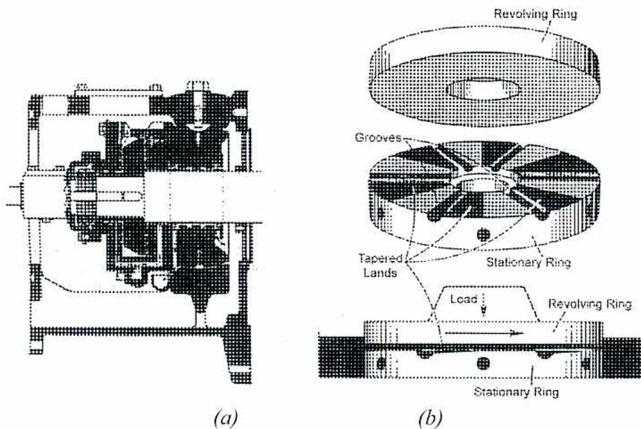
Figure 2
2-Cylinder Reheat Turbine
Another 2 case machine is shown in Fig. 3 with the exhaust steam ducted axially into a surface condenser. The surface condenser is on the same level, or floor, as the turbine. This arrangement uses less plant space than designs with the turbine above the condenser.
![Figure 3: Two-Cylinder Reheat Steam Turbine. This is a 2D cross-sectional side view of a steam turbine. It features two main turbine casings. The first casing on the left is the high-pressure section, and the second casing on the right is the intermediate-pressure section. A reheat duct connects the two casings. The exhaust from the second casing is directed through a long, narrow duct that leads into a large, rectangular component representing a surface condenser. The turbine and condenser are shown on the same horizontal level.](c1c7af7ea36be0323047962df57d75b0_img.jpg)
Figure 3
Two-Cylinder Reheat Steam Turbine
The steam flow through these units is too high to build in a tandem compound arrangement, such as those in Fig. 2 and Fig. 3. A tandem compound machine has all of the turbine rotors and load connected axially into a single shaft. Cross compounding features two separate and unconnected shafts, with the steam flowing from one machine to another. Nuclear steam generators operate at lower pressures and lower temperatures than similar sized fossil-fired units.
The 4 casing cross compound design used for nuclear power plants is shown in Fig. 4. The HP and IP sections drive one generator, and the LP cases drive the second generator.
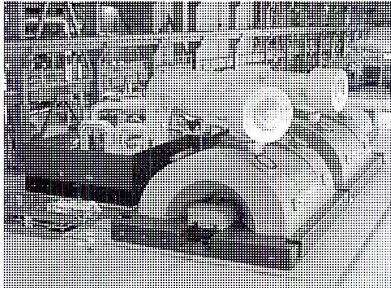
A black and white photograph showing a large, complex industrial steam turbine. The turbine is composed of several distinct cylindrical sections of varying diameters, connected by pipes and structural supports. It is situated in an industrial environment with other machinery and piping visible in the background.
Figure 4
Cross Compound Steam Turbine
Steam turbines for industrial applications range in size from fan or pump drivers to units of 50 MW. They often drive large compressors. Fig. 5 shows a General Electric (GE) mechanical drive turbine. These turbines are built in ratings from 7.5 to 900 kW, running at speeds from 1000 to 6500 rev/min. They are used to drive pumps, compressors, fans, blowers, and similar equipment. The turbine illustrated in Fig. 5 is a single-stage, velocity compounded, impulse type. Two rows of moving blades are arranged with a row of stationary blades between them.
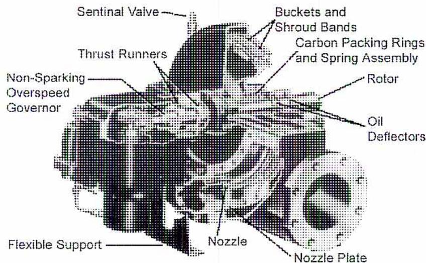
A detailed cutaway diagram of a single-stage mechanical drive turbine. The diagram shows the internal components of the turbine, including the nozzle, nozzle plate, buckets and shroud bands, carbon packing rings and spring assembly, rotor, oil deflectors, thrust runners, non-sparking overspeed governor, and a flexible support. The turbine is shown in a horizontal orientation, with the nozzle on the left and the rotor extending to the right.
Figure 5
Single-Stage Mechanical Drive Turbine
(Courtesy of General Electric)
The turbine shown in Fig. 6 is an Allis-Chalmers with two extraction points. Two impulse wheels are used, one before the HP reaction staging and one before the LP reaction stages. This is a typical extraction type of turbine. This machine is rated at 4000 kW at 3600 rev/min.
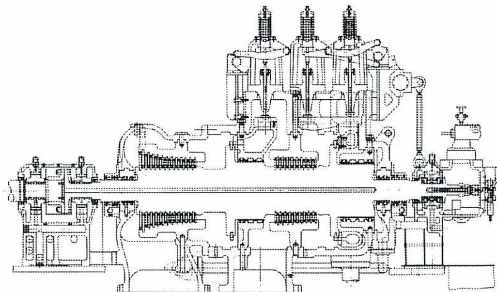
A detailed cross-sectional line drawing of a steam turbine. The diagram shows the internal components including the boiler, the turbine casing, the high-pressure (HP) reaction staging, the low-pressure (LP) reaction stages, and two impulse wheels. The turbine is mounted on a base, and various external piping and structural elements are visible. The drawing is a technical illustration, likely from a textbook or technical manual.
Figure 6
Automatic Extraction or Mixed Pressure Type Turbine
Fig. 7 shows a GE industrial turbine with the top casing removed. These turbines come in many sizes.
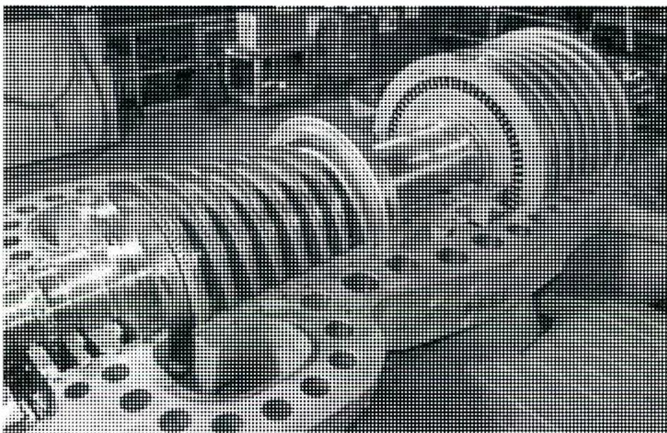
A black and white photograph of a large industrial steam turbine. The top casing has been removed, revealing the internal components, including the high-pressure and low-pressure sections, and the impulse wheels. The turbine is situated in an industrial setting, and the lighting is somewhat dim, highlighting the metallic surfaces and complex structure of the machine.
Figure 7
GE Industrial Turbine
Table 1 shows the various sizes available from GE. The most common sizes are from 15 to 50 MW. Smaller units down to 1 MW are available, as are units up to 100 MW.
Table 1
GE Small Turbines
| Turbine Code | Type | Backpressure Limits | Pressure | Temp | Single / Multivalve | Power Range | Speed Range | Steam Path Technology |
|---|---|---|---|---|---|---|---|---|
| NG | Backpressure | Up to 20 bar |
70 bar
1000 psi |
540°C
1000°F |
Multi | 1 to 50 MW |
3000 to
16000 RPM |
Impulse / Reaction
Hybrid |
| HNG | Backpressure | Up to 20 bar |
140 bar
2000 psi |
540°C
1000°F |
Multi | 1 to 50 MW |
3000 to
16000 RPM |
Impulse / Reaction
Hybrid |
| HG | Backpressure | Up to 60 bar |
140 bar
2000 psi |
540°C | Multi | 1 to 40 MW |
3000 to
16000 RPM |
Impulse / Reaction
Hybrid |
| NK | Condensing | N/A |
70 bar
1000 psi |
540°C
1000°F |
Multi | 1 to 65 MW |
3000 to
16000 RPM |
Impulse / Reaction
Hybrid |
| HNK | Condensing | N/A |
140 bar
2000 psi |
540°C
1000°F |
Multi | 5 to 100 MW |
3000 to
12500 RPM |
Impulse / Reaction
Hybrid |
| P | Backpressure | Up to 80 bar |
80 bar
1150 psi |
480°C
900°F |
Single | Up to 5 MW |
Up to
16000 RPM |
Impulse |
| MP | Backpressure | Up to 150 bar |
150 bar
2150 psi |
540°C
1000°F |
Multi | Up to 40 MW |
Up to
16000 RPM |
Impulse |
| C | Condensing | N/A |
80 bar
1150 psi |
480°C
900°F |
Single | Up to 6 MW |
Up to
16000 RPM |
Impulse |
| MC | Condensing | N/A |
150 bar
2150 psi |
540°C
1000°F |
Multi | Up to 40 MW |
Up to
16000 RPM |
Impulse |
A packaged axial flow turbine generator set is shown in Fig. 8. This is a compact design suitable for small power plants or cogeneration applications. It comes complete with a generator and surface condenser.
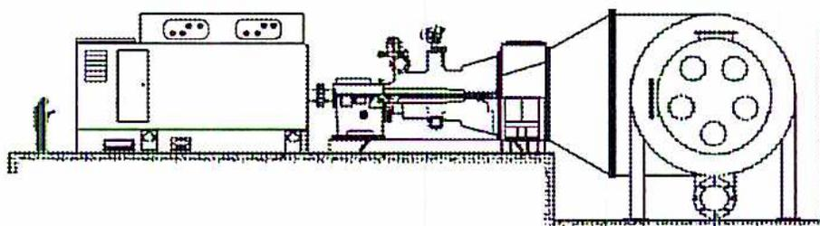
Figure 8
Packaged Axial Exhaust Turbine
Describe the design and components of steam turbine casings and casing drains.
Turbine casings are designed to handle high pressures and temperatures while:
Horizontal split casings or cylinders are used to facilitate assembly and inspection. This is not ideal as the heavy flanges of the joints are slow to follow the temperature changes of the cylinder walls. Casings are made of thick material in order to withstand the high pressures and temperatures. In practice, the thickness of walls and flanges decreases from the inlet to the exhaust end.
Large casings for low-pressure turbines are constructed of welded plates. Smaller low-pressure casings are cast iron, which may be used for temperatures up to 230°C. Casings for intermediate pressures are made of cast carbon steel able to withstand temperatures up to 425°C. High-pressure, high-temperature casings used for temperatures above 550°C are made of cast alloy steels like 3% chromium and 1% molybdenum. Higher temperatures require higher alloy metals (higher chromium content). The alloys must also have a high creep resistance to operate at these temperatures.
Casings are made steam tight without the use of gaskets by machining their flange surfaces to a very exact and smooth surface and then joining those surfaces accurately and securely together. Dowel pins are often used to secure exact alignment of the flange joint. A boring mill machines the inside of the casing. Grooves are machined for the diaphragms (for impulse turbines) or for stationary blades (reaction turbines). The casing is also bored for shaft seals and bearings.
For high-pressure casings, the flanges must be very thick. Consequently, they will heat up much more slowly than the casing walls. Some type of auxiliary flange heating is often used for quicker and more uniform heating of the flanges and casing. Steam flows through machined channels between the flanges or through holes drilled axially through the upper and lower flanges.
Fig. 9 shows the lower section of a horizontally split casing. The centreline support allows the casing to expand and contract evenly while maintaining alignment.
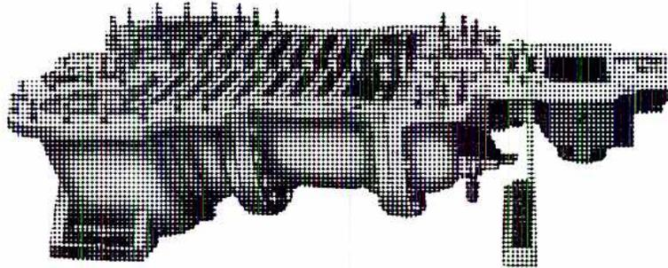
A 3D perspective view of the lower half of a horizontally split turbine casing. The casing is a large, dark, metallic structure with a complex, irregular shape. It features a central horizontal split line and several vertical support legs or brackets that extend downwards to provide stability and alignment. The surface appears rough and cast.
Figure 9
Turbine Lower Casing and Support
Double casings are used for very high steam pressure applications. The highest pressure is applied to the inner casing, which is open at the exhaust end. The turbine inner casing exhausts to the outer casing. The pressure is divided between the casings, and more importantly, so is the temperature. The thermal stresses on casings and flanges are greatly reduced. Fig.10 illustrates a double-shell HP turbine casing.
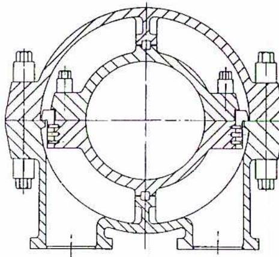
A cross-sectional diagram of a double-shell high-pressure turbine casing. It shows two concentric cylindrical shells. The inner shell is smaller and has a central opening. The outer shell is larger and has a more complex structure with various flanges and bolts. The diagram is symmetrical about a vertical centerline, showing the internal components and the outer casing's support structure.
Figure 10
Double-Shell HP Casing
It is important that the steam moving through the turbine be as dry (absence of water) as possible. Water in the steam causes a loss in turbine efficiency and corrodes the turbine blading it comes in contact with. Turbines are designed to have slightly wet steam exiting the low-pressure blading. It is generally accepted that the maximum percentage of wetness of the steam leaving the exhaust end of a turbine should be 14%.
The shape of the cylinder casing allows this water to drain to the condenser. Special draining grooves are arranged in the cylinder casing to help remove water more effectively. An example of this type of draining arrangement is illustrated in Fig. 11.
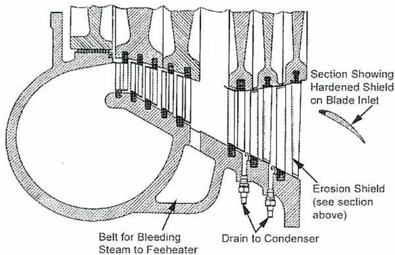
The diagram shows a cross-sectional view of a turbine cylinder casing. It features several vertical drain pipes extending from the casing down to a common drain line labeled 'Drain to Condenser'. A 'Belt for Bleeding Steam to Feeheater' is shown as a horizontal line within the casing. An inset on the right shows a detailed view of a blade inlet with a 'Section Showing Hardened Shield on Blade Inlet'. Another label points to a protective 'Erosion Shield (see section above)' located near the bottom of the casing.
Figure 11
Cylinder Casing Drainage
Drains must be located, and be of sufficient number, to avoid buildup of condensate at any point in the turbine. Liquid water is likely to be re-entrained into the steam flow causing erosion of the turbine blades and diaphragms. Standing pools of condensate will also cause severe corrosion of the turbine casing. Turbines are designed to avoid the formation of condensate before the steam reaches the exhaust end. Condensate that forms prematurely (called early condensate) may be corrosive (if it has a low pH) and should be drained as quickly as it forms.
Describe the design and components of steam turbine rotors, blading, and diaphragms.
Turbine rotors (Fig. 12) are categorized in three ways according to construction:
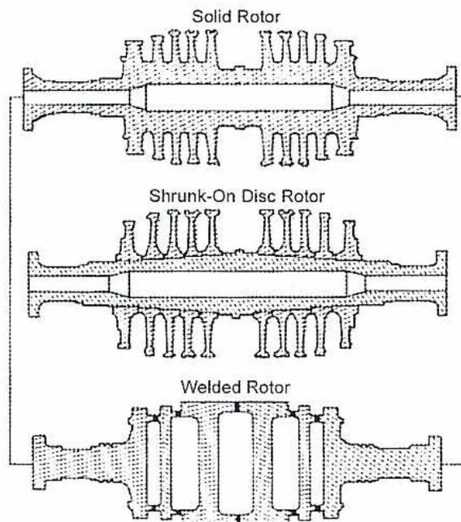
Figure 12
Turbine Rotors
Rotors of this type have wheels and shaft machined from one solid forging, the whole rotor being one piece of metal. This is a rigid construction. Solid rotors eliminate the possibility of loose wheels, which can occur with shrunk-on type rotors. Grooves are machined in the wheel rims of solid rotors to attach the blading.
Solid forged rotors are used in the HP and IP cylinders for designs employing impulse type blading and for IP cylinders when reaction type blading is used. Fig. 13 shows a rotor of the solid forged type.
The choice of a solid rotor is dependent upon the turbine startup procedure. Stresses in the rotor material are caused by the temperature differences between the surface areas and the centre parts of the rotor. The rotor temperature becomes more uniform as the rotor is heated by the steam. The turbine is warmed up slowly, allowing for uniform heating across all areas of the turbine. This ensures balanced thermal expansion between the rotor assembly and the casing. The stress levels in a rotor are affected by the steam temperature, the diameter of the rotor, and the time taken to reach full-load operating conditions.
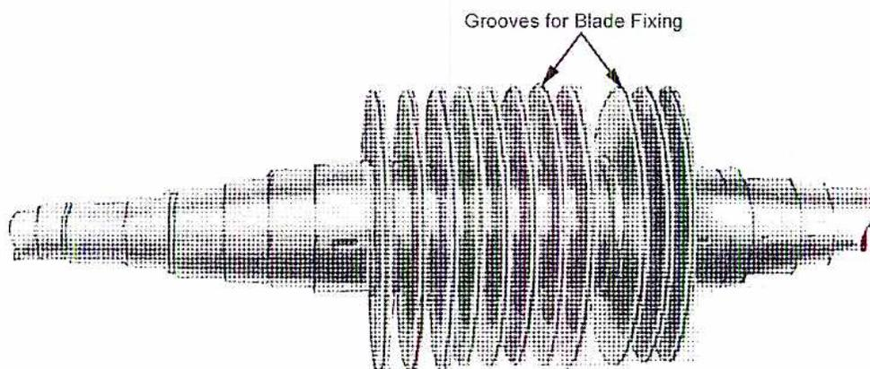
Figure 13
Solid Forged Rotor
The disc rotor is constructed of a number of separately forged discs or wheels. The hubs of these wheels are shrunk or keyed onto the central shaft. The outer rims of the wheels have grooves machined to allow for attaching the blades. Suitable clearances are left between the hubs to allow for expansion axially along the line of the shaft. Disc rotors are also referred to as built-up rotors.
Under operating conditions, the temperature of the wheels rises faster than that of the shaft. This might tend to make the wheel hubs become loose. To avoid any such danger, care is taken during construction of the rotor to ensure the wheels are shrunk on tight and correctly stressed. Fig. 14 illustrates a disc type of rotor which is the type used in the LP cylinder of most designs of large turbines.
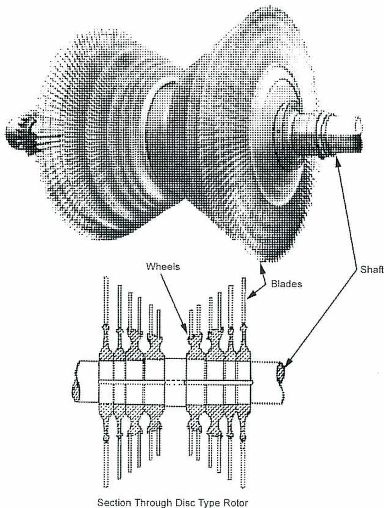
Figure 14
Disc Type Rotor
Welded rotors are built up from a number of discs and two shaft ends. They are joined together by welding at the circumferences. Because there are no central holes in the discs, the structure is very strong. Small holes are drilled in the discs to allow steam to enter inside the rotor body and supply uniform heat to the rotor. Grooves are machined in the discs to attach the blades.
A fairly light and rigid drum rotor may be manufactured from discs welded together to form a drum, as shown in Fig. 15. Before welding, the rotor is heated by induction heating. Welding is performed with automatic welding machines such as the argon arc process, where the arc burns in an argon atmosphere.
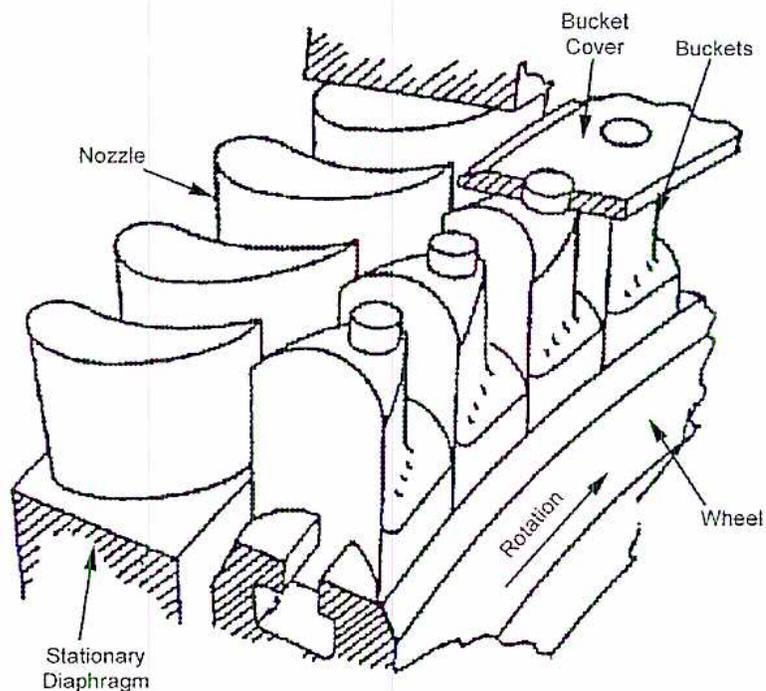
Figure 15
Welded Drum Turbine Rotor
The design of turbine blading affects the reliability and efficiency of the turbine. Depending upon the design of the turbine, there is either:
The longer the blade the greater the bending force at the root, or fixing point, of the blade. There is also a centrifugal force, due to the speed at which the blade is rotating, trying to throw the blade outwards.
These two forces—the bending force and the throwing-out force—are at maximum in the largest blade wheel at the LP exhaust end of the turbine. Thus, the stresses which these forces impose limit the size of the blades and the diameter of the last wheel. This limitation is one of the reasons why turbines are designed with double flow in the LP cylinder. In the double flow design, steam enters at the centre of the rotor with half of the steam flowing to the front of the machine and half flowing toward the rear of the machine. This design can handle double the flow of steam compared to a single flow with the same diameter of blading. The rotor in Fig. 2 is a double flow rotor.
The mechanical stresses just described are not a great problem in the short HP moving blading. This blading is subject to higher temperatures, which is a greater problem from the design aspect.
In reaction blading, pressure drops occur across both fixed and moving blades. In the HP cylinder, a very effective seal between fixed and moving blading is essential to prevent steam leakage. Steam that leaks or bypasses the blades produces no work and reduces the efficiency of the turbine. Fixed blades fit in grooves in the cylinder casing and moving blades fit in grooves machined in the rotor.
Blading subject to high temperatures in HP cylinders are made with root section and shrouding in one piece. The shrouds have a projecting portion thinning down to form a single knife-edge on the moving blades. On the fixed blades, a second strip is tapered to form a double knife-edge. The blade packets fit in the grooves to form a complete row of fixed or moving blades. The blade packets are serrated along the roots and secured in the grooves, which are also serrated, by means of a side-locking strip as shown in Fig. 16.
An illustration of reaction blading is shown in Fig. 16. The leakage of steam is controlled by the axial clearance, that is, the clearance along the line of the shaft. This type of sealing is known as end tightening. Additional sealing is provided by a radial fin machined into the shroud and adjusted to a fine clearance between cylinder bore or rotor body.
![Figure 16: HP Reaction Type Blading showing End Tightening. This is a 3D cutaway diagram of a turbine assembly. It shows a series of 'Fixed Blades' and 'Moving Blades' arranged in alternating rows. The 'Fixed Blades' are mounted on a stationary casing, while the 'Moving Blades' are mounted on a central 'Rotor'. The blades are connected at their tips by shrouds. Labels point to various components: 'Single Knife-Edged Seal' on the moving blade shroud, 'Double Knife-Edged Seal' on the fixed blade shroud, 'Serrated Locking Strip' at the base of the blades, 'Radial Fin' on the casing, and the 'Rotor' itself.](1630bfd9ebf9b95faec11ae6cdfd9c0a_img.jpg)
Figure 16
HP Reaction Type Blading showing End Tightening
The shrouding supplies support strength to the blades in addition to preventing steam leakage, as shown in Fig. 17. In lower pressure stages of the turbine where support is more important than sealing, a lacing wire is used, as in Fig. 18. Turbine blades must be made of materials which will withstand high temperatures in the inlet stages, and low temperatures but high rotational stresses in the exhaust stages. The most common material in use today is stainless steel having low carbon content, about 0.1%, and a chromium content of about 12%. This material is strong, resistant to corrosion and erosion, and can be forged, machined and welded.
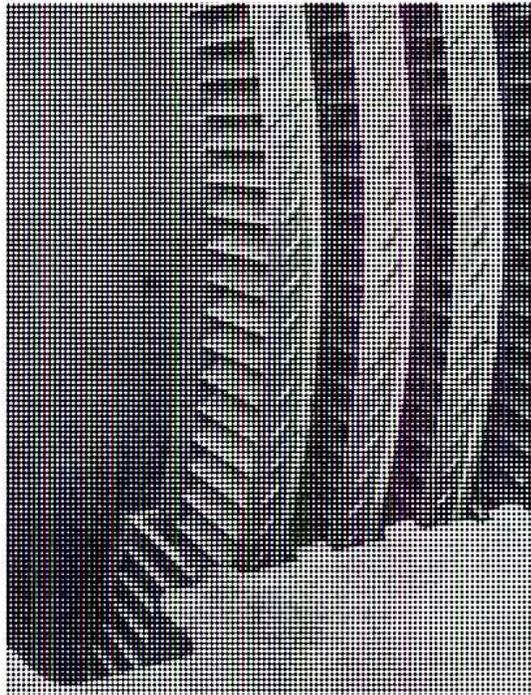
A close-up, black and white photograph showing a section of a turbine or compressor. The blades are arranged in a row and are topped with a continuous shroud, which is a common feature in high-pressure or high-speed turbomachinery to reduce tip leakage and improve efficiency. The blades themselves have a complex, curved profile.
Figure 17
Shrouded Built-up Reaction Blading
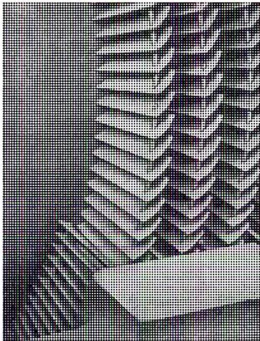
A close-up, black and white photograph showing a section of turbomachinery blades. Unlike the previous image, these blades are unshrouded, meaning there is no continuous top cover. Each blade has its own individual tip. The arrangement and profile of the blades are similar to those in Figure 17, but the lack of a shroud is the primary distinguishing feature.
Figure 18
Unshrouded Built-up Reaction Blading
The HP moving blades for impulse turbines are machined from solid bar, and the roots and spacers are formed with the blade. This is illustrated in Fig. 19. Tangs are left at the tips of the blades, so that when fixed in position in the wheel, the shrouding can be attached. The shrouding is made up from sections of metal strip punched with holes to correspond with the tangs. The strip is passed over the tangs which secure the strip in position. The shrouding fits in separate sections to allow for expansion.
There is no pressure drop across the moving blades of an impulse turbine, and therefore, the sealing arrangements are not as important as in the reaction type. The shrouding on the impulse blading helps to guide the steam through the moving blades, allowing larger radial clearance and strengthening the assembly.
Due to the steam pressure difference on each side of the diaphragm, it is necessary to provide seals at the hole, where the shaft passes through the diaphragm, to prevent steam leakage along the shaft.
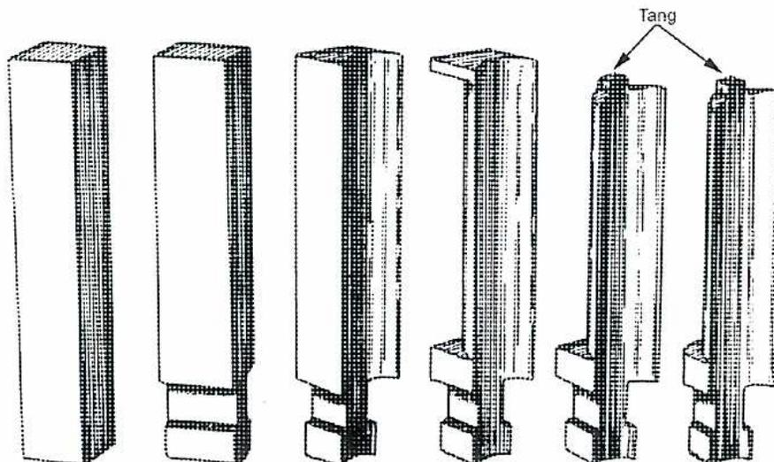
Figure 19
Stages in the manufacture of HP Impulse Type Moving Blades
A significant improvement in steam turbine efficiency was brought about by the use of computer modelling of steam flows through turbine blading. The shape of the blading changed after 3-D (3-dimensional) modelling. The blading profile, or shape, is not symmetrical; it changed from parallel sided to twisted or bowed. Fig. 20 compares conventional turbine blading and 3-D modelled blading. The resulting steam flow is more evenly distributed across the blading with 3-D modelled blading. Fewer vortices with a less turbulent flow are other advantages of 3-D modelled blading. The twisted shape of a low pressure case blade (3-D modelled) is shown in Fig. 21.
![Profile view of a conventional blade with parallel sides. Cross-sectional diagram of flow over a conventional blade. It shows a radial line, tip and base end walls, mean flow, and secondary flow. 3D perspective view of flow over a conventional blade. It shows main flow, secondary flow, and vortices. Profile view of a full 3-D blade that is twisted and bowed. Cross-sectional diagram of flow over a full 3-D blade. It shows tip flow, radial line, tip and base end walls, mean flow, and base flow. 3D perspective view of flow over a full 3-D blade. It shows main flow and secondary flow.](e69b9188aa2c14ec6b21c83f711fef65_img.jpg)
| Conventional |
Profile (Parallel Sided) |
Flow
Radial Line
|
Main Flow
Secondary Flow
|
| Full 3-D |
Profile (Twisted & Bowed) |
Flow
Tip Flow
|
Main Flow Secondary Flow |
Figure 20
Conventional and 3-D Blading
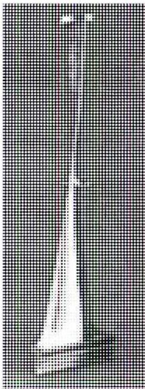
Figure 21
Low Pressure Turbine Blade
Fixed blading of an impulse turbine consists of nozzles mounted in diaphragms. The diaphragm is made in two halves; one half is attached to the upper half of the cylinder casing, and the other half is attached to the lower half of the cylinder casing. The diaphragms are positioned in the cylinder casings by means of keys that allow for some expansion. Special carrier rings support the diaphragms in HP cylinders.
At the HP end of the turbine, the diaphragms are the built-up type. Nozzles are machined separately from a solid bar and attached by grooves and rivets to the diaphragm plate. In some cases, the nozzles are welded together and to the plate. Fig. 22 illustrates attachment of nozzles to the diaphragm plates.
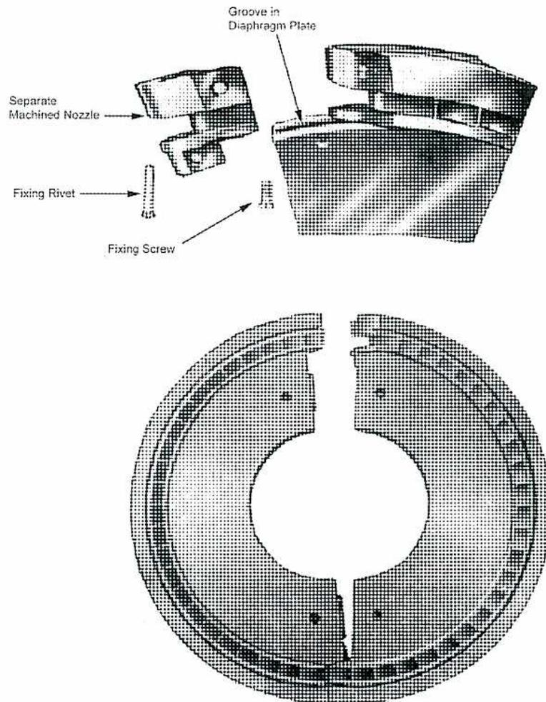
The diagram illustrates the construction of a built-up diaphragm. The top portion shows a detailed view of a 'Separate Machined Nozzle' being attached to a 'Diaphragm Plate' using a 'Fixing Rivet' and a 'Fixing Screw'. A 'Groove in Diaphragm Plate' is also indicated. The bottom portion shows a full circular view of the diaphragm plate with multiple nozzles attached around its circumference.
Figure 22
Built-up Diaphragm
Describe shaft seal designs, including stuffing boxes, carbon rings, labyrinth and water seals.
Due to the design and operating characteristics of steam turbines, there are a number of pressure differential points across stages and sections of the turbine. Leakage of steam across these points is a waste of energy and reduces the efficiency of the turbine. Leakage is kept to a minimum at all times. At the high-pressure end of the turbine, correct shaft sealing keeps the steam from leaking past the shaft.
At the low-pressure end of noncondensing turbines, the potential for steam loss to the atmosphere is greatly reduced due to the smaller pressure difference across the casing to the atmosphere. In condensing units, the final stages of the turbine operate below atmospheric pressure tending to draw air into these stages. Air infiltration must be minimized and/or eliminated as the air increases the pressure in the condenser. The increased backpressure decreases the efficiency of the turbine and increases the cooling load on the condenser.
Four methods of sealing rotating parts are:
Stuffing boxes are often used in centrifugal pumps. They are used only rarely on the smallest of turbines.
An effective seal is produced by a series of spring-backed carbon rings. Fig. 23 shows four rings mounted in a packing box or container. The detail at the right side of the figure indicates how each ring is divided into three sections. The spring encircles the ring allowing some radial adjustment but preventing axial movement. Clearances are held extremely close and the graphite (carbon) is self-lubricating.
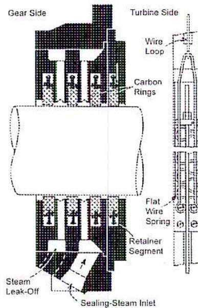
A cross-sectional diagram of a carbon ring shaft seal. The diagram is divided into two main sections: 'Gear Side' on the left and 'Turbine Side' on the right. On the turbine side, a 'Wire Loop' is shown at the top, followed by 'Carbon Rings'. Below the rings is a 'Flat Wire Spring' and a 'Retainer Segment'. On the gear side, there is a 'Steam Leak-Off' section and a 'Sealing-Steam Inlet' at the bottom.
Figure 23
Carbon Ring Shaft Seal
In large machines, the greater shaft diameters increase the surface speed above the limits of carbon rings. Labyrinth rings are effective for larger shafts (see Fig. 24). The seals function by breaking down the leakage over a number of steps (depending on the pressure drop involved). Each step causes eddy currents reducing the velocity of the steam through the preceding clearance. The total pressure drop is broken down into many small pressure drops. Sealing steam maybe added partway down the shaft. A steam leakoff section is used to bleed off steam before it exits along the shaft to atmosphere. The leakoff also removes any condensate that forms in the seal.
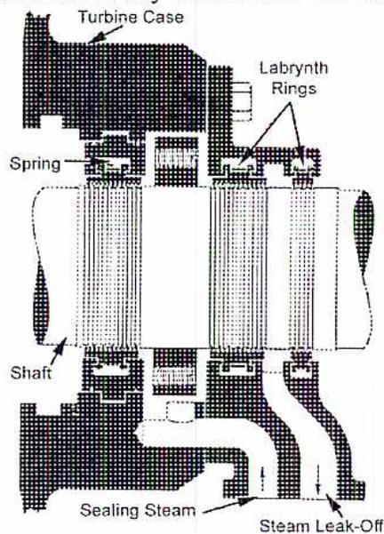
A cross-sectional diagram of a low-pressure labyrinth shaft seal. It shows the 'Turbine Case' at the top, followed by 'Labyrinth Rings' on the shaft. A 'Spring' is shown on the left side of the shaft. The 'Shaft' itself is labeled. 'Sealing Steam' is indicated entering from the bottom, and a 'Steam Leak-Off' section is shown at the bottom right.
Figure 24
Low-Pressure Labyrinth Shaft Seal
Labyrinth and carbon rings reduce but do not eliminate leakage of steam where the shaft leaves the casing. A water sealing gland used in combination with labyrinths effectively provides a positive seal. This gland, shown in Fig. 25, is quite simple in its application. It consists of a centrifugal pump runner (impeller) fixed to the turbine shaft. Cooling water (usually condensate) is fed to the runner and builds up a ring of water under centrifugal pressure at its periphery. The ring of water forms a positive seal. A detailed view of the seal is shown in Fig. 26. The main advantage of water seals is that there is no leakage steam at the shaft.
Disadvantages of this arrangement are:
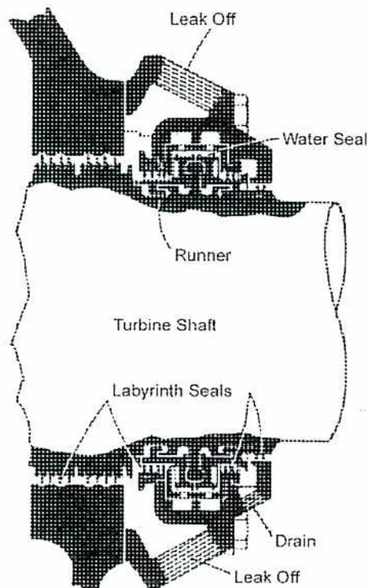
Figure 25
Water Sealed Gland Overview
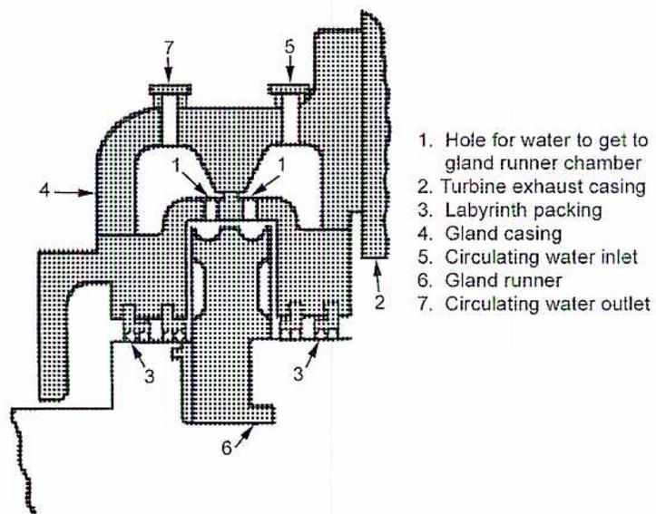
A cross-sectional diagram of a water-sealed gland assembly. The diagram shows a central shaft (gland runner) passing through a series of seals and chambers.
Figure 26
Water Sealed Gland Detail
Describe the design and components of steam turbine bearings.
The bearing on a turbine really “gets around.” A typical 200 mm diameter bearing operating at 3600 rev/min has a surface speed of 130 km/h. Such a bearing must run continuously for years. In five years it would travel over 5 600 000 km with only minor wear. Bearings are precision assemblies that require attention and preventative maintenance during operation and careful handling during installation.
Bearing housings are usually of sturdy box-construction. They are bolted to or form an integral part of the main body casting. Rigidity and alignment are major considerations in steam turbine bearings. Rotor sag causes misalignment of bearings in larger units. Some misalignment is dealt with by self-aligning bearings.
Small turbines often use ball bearings. They are the deep-groove type, either single or double row. They are used where end thrust is low. Double row and angular thrust types are used for heavier end thrust. Normally, the bearing at one end of the turbine rotor is fixed rigidly in the housing and takes end thrust. The other end allows movement (a limited amount) in an axial direction to allow for differential expansion and contraction between the rotor and the casing.
A cut-away section of a small turbine equipped with ring-oiled bearings is shown in Fig. 27. The rings ride freely on the journals revolving with them, dipping into oil contained in the bearing housing. They automatically carry oil to the top of the journal from the reservoir. It is distributed over the length of the journal by the force created by shaft rotation and by special grooves machined into the bearing surface.
When the turbine is operating with high temperature steam, or is in a warm location, the oil in the bearing reservoirs may become quite hot. To maintain the oil at a steady operating temperature, cooling water jackets or coils are often incorporated in the bearing design.
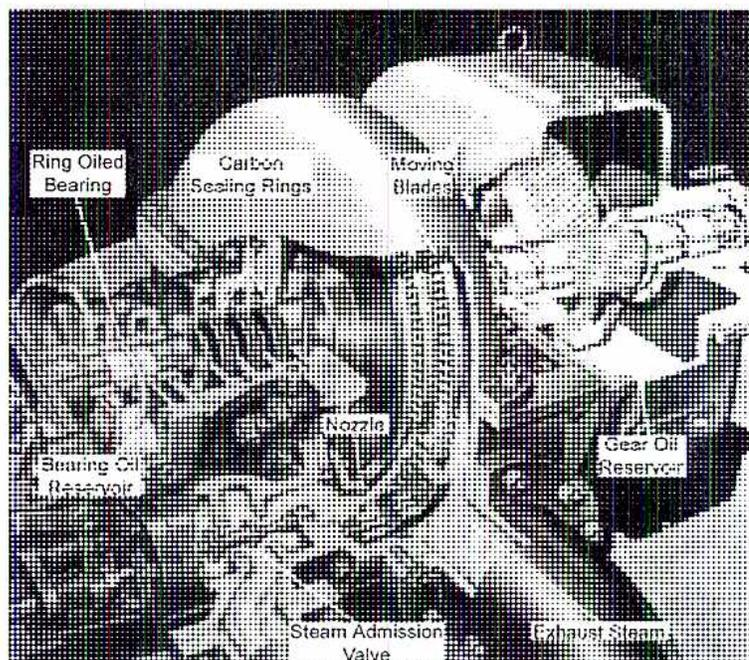
A detailed cutaway photograph of a small turbine and gear box assembly. The image shows internal mechanical components including a turbine section with blades and a gear box section. Several labels with leader lines point to specific parts: "Ring Oiled Bearing" at the top left, "Carbon Sealing Rings" near the top center, "Moving Blades" at the top right, "Nozzle" in the center, "Bearing Oil Reservoir" at the bottom left, "Steam Admission Valve" at the bottom center, "Gear Oil Reservoir" at the bottom right, and "Exhaust Steam" at the bottom right.
Figure 27
Cutaway Section of a Small Turbine and Gear Box
Most small mechanical-drive turbines are fitted with ring-oiled bearings as shown in Fig. 28. The rings rest on the journal and dip into the oil reservoir in the bearing base. Rotation of the journal rotates the rings that carry oil from the reservoir to the top of the journal. It is distributed to the bearing surface. In this design, cooling water is used to cool the oil.
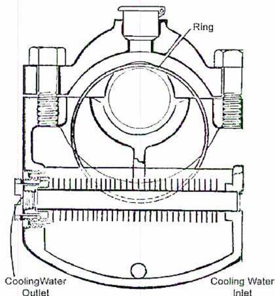
A cross-sectional technical drawing of a ring-oiled bearing. It shows a central journal (shaft) surrounded by a bearing housing. A "Ring" is shown resting on the journal and dipping into an oil reservoir at the bottom. The bearing housing has a "Cooling Water Inlet" at the bottom right and a "Cooling Water Outlet" at the bottom left, with internal channels for circulating cooling water.
Figure 28
Ring-Oiled Bearing
Sleeve bearings find application in all sizes of turbines. Small machines normally have the babbitt-lined, horizontally-split type fitted with one or more oil rings. Cooling is accomplished either by means of a large oil reservoir or by a water jacket forming part of the bearing casting, provision being made for the circulation of cooling water.
All large turbines use babbitt-lined sleeve bearings. They have proven to be most reliable and require a minimum amount of maintenance and attention. They have a very low coefficient of friction. Friction values are about 0.005 at 1800 rev/min for normal operating temperature and loading. Normal values refer to the operating temperature ranges specified by the manufacturer of the turbine.
The rotor of a steam turbine is supported by two main bearings located outside the steam cylinder. Because of the extremely small clearances between the shaft and the shaft seals and between the blading and the stationary parts, the bearings must be accurately aligned. Wear must be kept to a minimum for the same reason, or damage will result to the shaft seals and blading.
The loads imposed upon the main bearings are chiefly due to the weight of the rotor assembly. This may or may not be equally divided between the bearings depending upon the relative position of the bearings and the centre of gravity of the rotor assembly. The design is usually such that the bearings do take equal shares of the load. In turbines where the admission steam is not uniformly distributed around the circumference, the forces on the blades have an influence on the bearing loads and pressures. If unbalanced forces become great enough, a vibrating load may be imposed upon the bearing in addition to that imposed by the rotor weight.
Large turbine main bearings generally consist of shells split horizontally and lined with an anti-friction bearing metal. The bearings are enclosed in a housing to which a generous supply of oil is pumped by the circulating pump. This oil is delivered to the bearing, and chamfers and oil grooves assist in its even distribution along the length of the journal. When an oil of correct viscosity is used, a wedge is formed between the journal and the bearing. The journal floats on the oil wedge. Metal to metal contact between the journal and bearing cannot occur.
The passages and grooves in the bearings are sized to permit a considerably greater flow of oil than is required solely for lubrication. This additional oil flow is required to remove heat. The heat is from friction and heat conducted to the bearing by the shaft. The shaft is heated by hot parts of the turbine such as hot blading. The oil flow is sufficient to cool the bearing, prevent hot spots due to induced heat, and maintain the oil and the bearing at operating temperature. The oil supplied to turbine main bearings serves more as a cooling agent than as a lubricant.
A thermometer is normally provided in each main bearing to allow the bearing temperature to be viewed and logged at regular intervals. The temperatures are a good indication of the condition of the bearings. A sudden rise in temperature indicates a condition needing attention such as oil flows, oil cooling, or turbine loading.
In turbines where the inlet steam is not uniformly distributed around the entire circumference of the rotating element, the forces on the blading can impact the bearing loadings. This and other unbalanced conditions can generate vibrations across the unit, adding to the stresses and reducing the life of the bearings. Fig. 29 shows a journal main bearing used on a steam turbine.
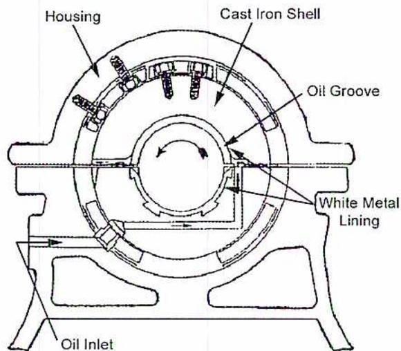
A cross-sectional diagram of a journal main bearing assembly. The diagram shows a central circular shaft with a clockwise rotation arrow. The shaft is surrounded by a 'White Metal Lining' which is held within a 'Cast Iron Shell'. An 'Oil Groove' is located at the top of the lining. The entire assembly is contained within a 'Housing'. An 'Oil Inlet' is indicated at the bottom left with an arrow pointing into the housing base.
Figure 29
Main Bearing
Describe the ways in which steam turbines are designed to counteract thrust.
In an impulse turbine, the pressure of the steam drops in the stationary nozzles. Theoretically, the steam pressures on both sides of the moving blades are equal. The thrust the steam exerts axially on the shaft is small. There is always a small thrust tending to move the shaft in an axial direction toward the discharge end of the turbine. This thrust is counteracted by preventing contact between the moving and stationary parts of the turbine. A thrust bearing is commonly used for impulse turbines to counteract the steam-induced thrust. The thrust bearing maintains the axial position of the spindle in relation to the cylinder and is a vital element in a steam turbine unit.
The reaction turbine has a pressure drop across each row of moving blades resulting in an end thrust imparted to the turbine shaft. This thrust is in addition to the thrust developed by the rotation of the shaft. One method of reducing the end thrust is the double-flow principle of turbine design. Steam is admitted to a point midway along the turbine casing, dividing and flowing axially in both directions. Opposing rows of blading are mounted on either side of the steam inlet. The nearly equal end thrusts developed by the blades counteract each other since they are moving in opposing directions. Various methods are employed to offset any remaining thrust. In turbines that are not double flow, other methods of thrust control are needed including: the use of thrust bearings and dummy pistons.
The thrust bearing maintains the axial position of the shaft in relation to the cylinder. The size of the thrust bearing is matched to the amount of thrust. All turbines have some thrust and require a thrust bearing to fix the position of the rotating shaft and blades in relation to the stationary blading.
In small turbines, ball bearings carry axial and radial loads. Since the blading is usually impulse type, axial loading is low. The ball bearings for light loads are either single or double row or deep-groove type. Double row, angular thrust ball bearings (Fig. 30) are used for heavier end loading. Normally, the bearing at one end of the turbine rotor is fixed rigidly in the housing and takes any end thrust. The other end has limited
movement in an axial direction to allow for differential thermal expansion and contraction of the rotor and the casing.
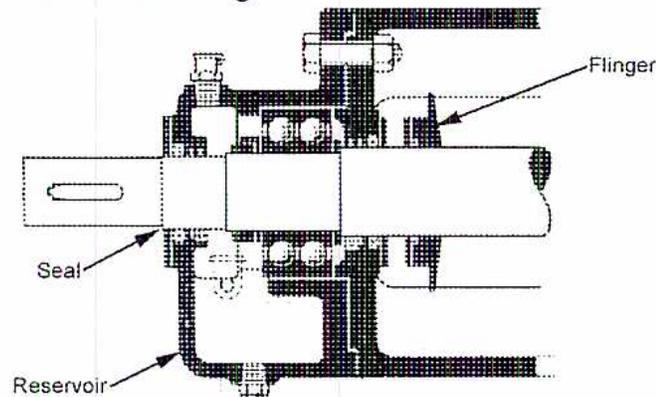
Figure 30
Ball Bearing - Double Row
For larger turbines, there are two general types of thrust bearings in common use:
In the tapered land , Fig. 31(a), a large diameter collar takes the thrust in both directions. Fig. 31(b) shows the theory of operation. The tapered shape of the lands builds up a wedge of oil forcing the collar away from actual metal-to-metal contact. The bearing itself is comprised of a revolving ring and a stationary ring. The revolving ring offers a smooth flat thrust surface, while the surface of the stationary ring is grooved radially. Half of each sector is chamfered towards the groove as shown. Radial holes admit oil from the external circumference of the bearing to the inner core. When the bearing is operating, the oil in the grooved and chamfered portions of the stationary ring is drawn into the pressure areas, thus forming complete surface-separating films.
Figure 31 consists of two parts: (a) and (b). Part (a) is a cross-sectional view of a tapered land bearing assembly, showing the internal components and their arrangement. Part (b) is an exploded view of the bearing, illustrating the following components: a top Revolving Ring , a middle Stationary Ring with Grooves and Tapered Lands , a bottom Stationary Ring , and a Revolving Ring at the base. A Load is indicated by a downward arrow on the top ring.
Figure 31
Tapered Land Bearing
The Kingsbury thrust bearing, shown in Fig. 32, uses a number of segments or tilting pads which are free to rock. Since the pivot point is slightly off centre, an oil wedge is set up with each segment automatically taking up its share of the load.
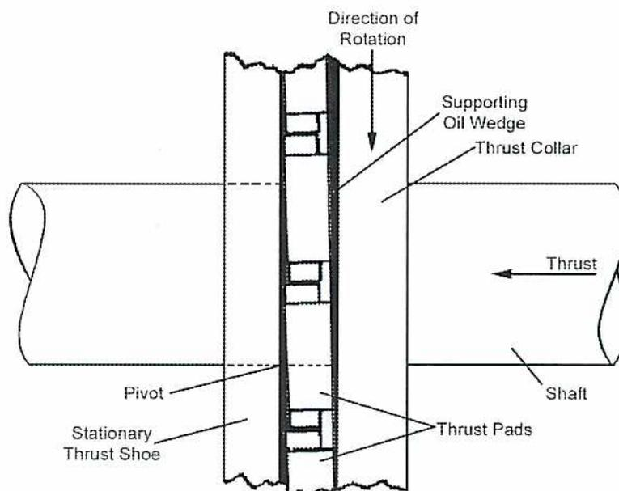
Figure 32 is a cross-sectional view of a Kingsbury thrust bearing. It shows a Shaft with a Thrust Collar . The collar is in contact with Thrust Pads mounted on a Stationary Thrust Shoe . Each pad is pivoted on a Pivot . The Direction of Rotation is indicated by a downward arrow. As the shaft rotates, a Supporting Oil Wedge is formed between the thrust collar and the pads. A Thrust force is indicated by a leftward arrow on the shaft.
Figure 32
Kingsbury Thrust Bearing
Fig. 33 shows another tilting pad type of thrust bearing. These tilting pads have a button pivot that causes the pad to pivot. Tilting pad thrust bearings require large amounts of oil to carry away the generated heat.
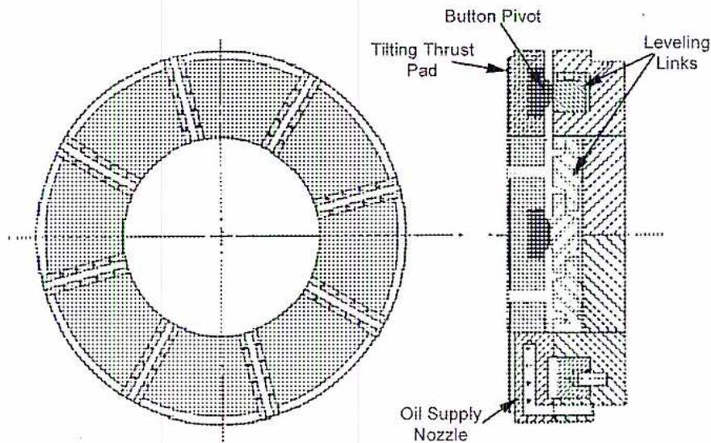
Figure 33
Tilting Pad Thrust Bearing
There is a pressure drop across each row of blades in a reaction turbine, and a considerable force is set up, which acts on the rotor in the direction of the steam flow. In order to counteract this force and reduce the load on the thrust bearings, dummy pistons are designed as part of the rotor at the steam inlet end.
An example of a dummy piston with balance pipe is shown in Fig. 34. The dummy piston diameter is calculated so that the force of the steam pressure acting upon it in the opposite direction to the steam flow balances out the force on the rotor blades in the direction of the steam flow. The size of the dummy piston is designed to keep a small but definite thrust towards the exhaust end of the turbine. A balance pipe is connected from the casing, on the outer side of the balance piston, to a tap-off point down the cylinder. The differential pressure remains constant at varying steam flow conditions.
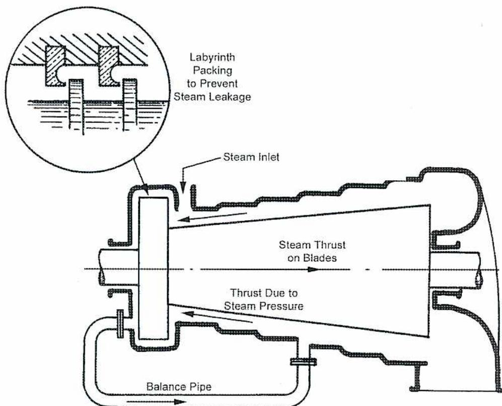
The diagram illustrates a turbine rotor assembly. A circular inset at the top left shows a cross-section of the 'Labyrinth Packing to Prevent Steam Leakage', which consists of a series of interlocking teeth. The main diagram shows the rotor assembly with a 'Steam Inlet' at the top. Arrows indicate 'Steam Thrust on Blades' and 'Thrust Due to Steam Pressure' acting on the rotor. A 'Balance Pipe' is shown at the bottom, connected to the rotor assembly.
Figure 34
Dummy Piston and Balance Pipe
The efficiency of reaction turbines depends upon close clearances between the stationary and moving blades. To protect the axial seals, an adjustable thrust bearing, or block, as shown in Fig. 35, is used. The whole thrust block is cylindrical and fits like a piston in the cylinder with the thrust block able to move axially. The axial position of the rotor is controlled within strictly defined limits. During startup, the thrust block is pushed against a stop in the direction of exhaust for maximum clearance between the stationary and moving blades, avoiding any danger of rubbing due to uneven temperatures. The clearances are set to normal after the turbine has been loaded and is up to operating temperature. The turbine blade clearances are adjusted by moving the thrust block for minimum blade clearance. Maintaining minimum blade clearances during operation minimizes the loss of steam energy bypassing the blades and helps maximize turbine efficiencies.
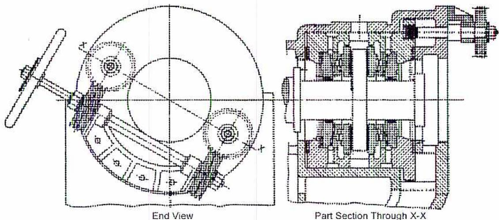
Figure 35
Turbine Thrust Adjusting Gear
Turbine manufacturers strive to minimize large axial thrusts on turbine rotors. Steam flows can be designed in opposite directions on a single shaft. This balances the thrusts, as shown for the LP turbine section of Fig. 36. Steam is admitted to the centre of the LP section. Half of the flow goes toward the HP section, and the other half flows toward the generator. The result is very little overall thrust in either direction.
![Figure 36: GE Turbine – Double Flow Down Exhaust LP Casing. This is a schematic diagram of a turbine-generator set. From left to right, it shows an HP (High Pressure) turbine section, an LP (Low Pressure) turbine section, and a Generator. Steam is shown entering the HP section from the top left. The LP section has a central steam inlet and two exhaust paths, one pointing down and one pointing up, indicating a double-flow arrangement. The HP and LP sections are connected by a common shaft, which is also connected to the Generator.](daa4a6fa7e2ba1954258f86b4928eb32_img.jpg)
Figure 36
GE Turbine – Double Flow Down Exhaust LP Casing
A more detailed view of this arrangement is shown in Fig. 37.
![Figure 37: Non-reheat, Double Flow Down Exhaust Unit. This is a detailed cross-sectional diagram of a steam turbine. On the left, the 'High Pressure Rotor' is shown within the 'High Pressure Casing', with 'High Pressure Admission' at its center. A 'Crossover Pipe' leads from the top of the HP casing to a generator. The HP rotor connects to a 'Low Pressure Rotor' via 'Bearing #2'. The LP rotor is housed in an 'Exhaust Casing' and features 'Last-Stage Bucket' blades. A 'Turning Gear' is mounted on the right end of the LP rotor, with an arrow pointing 'To Generator'. The entire assembly is supported by 'Bearing #1', 'Bearing #3', and 'Bearing #4'. 'Thrust Bearings' are located at the far left end of the HP casing.](967c30813761a8952ecc5e16bf42ea45_img.jpg)
Figure 37
Non-reheat, Double Flow Down Exhaust Unit
Fig. 38 illustrates how opposed steam flow in the HP and IP sections can also be used to reduce axial thrusts. In this arrangement, the HP casing steam flow is toward the front of the turbine. The IP flow is toward the rear of the turbine. The HP and IP use a single shaft, making it possible to use one thrust bearing for the HP/IP casing.
![Figure 38: Opposed Flow HP/IP Section. This diagram shows a simplified cross-section of a turbine with 'HP' (High Pressure) and 'IP' (Intermediate Pressure) sections on a single shaft. An arrow points from the IP section upwards, labeled 'To Crossover To LP'. Below the main diagram, a smaller schematic shows steam flow directions: 'Cold Reheat' entering from the left, 'Main Stream' entering from the bottom, and 'Hot Reheat' entering from the right. Arrows indicate the resulting flow directions within the HP and IP casings.](3668a836db39d25d24b56180a9c9a7fb_img.jpg)
Figure 38
Opposed Flow HP/IP Section
Image: A blank white page with three circular punch holes on the right margin and two faint vertical lines running down the center of the page.
Describe the purpose and design of expansion and anchoring components.
To ensure that correct alignment of the turbine is maintained under all operating conditions, provision is made to allow controlled axial and radial expansion. Axial means the expanding steam flow is parallel to the line of the shafts. Radial (or transverse) means the expansion is at right angles to the line of the shafts. The LP cylinder casing exhaust is usually anchored to the foundation (axially only) at one point. Movement of both the LP and the HP cylinder casings is allowed to take place by means of sliding supports or keyways. The casing supports and pedestals are designed specifically for each turbine and their specific operating conditions.
An example of sliding supports for a HP cylinder is shown in Fig. 39. The cylinder casing is rigidly connected to the bearing pedestal. It is free to move radially away from the shaft in all directions while remaining in alignment. The bearing pedestal is allowed to slide axially on keyways attached to the bedplate and the pedestal.
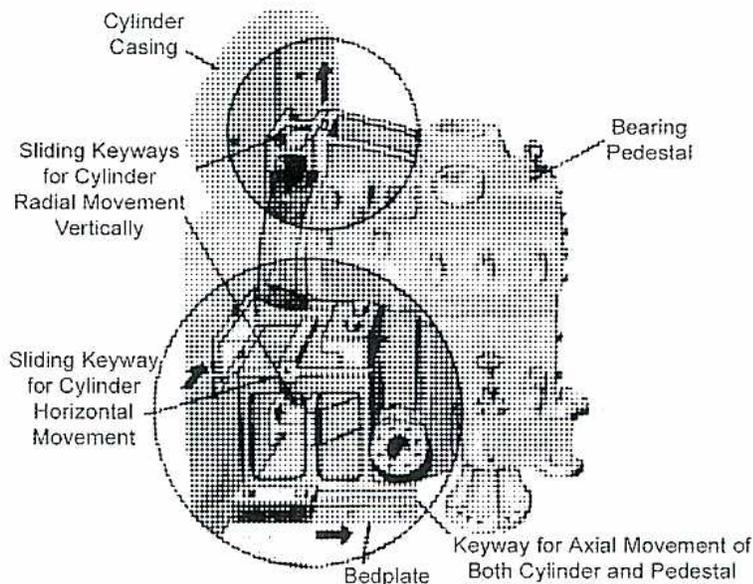
The diagram illustrates the support system for a high-pressure (HP) turbine cylinder. It shows a cross-section of the cylinder casing, which is rigidly connected to a bearing pedestal. The bearing pedestal is mounted on a bedplate. The diagram highlights three key components for movement: 'Sliding Keyways for Cylinder Radial Movement Vertically' (indicated by a vertical arrow), 'Sliding Keyway for Cylinder Horizontal Movement' (indicated by a horizontal arrow), and 'Keyway for Axial Movement of Both Cylinder and Pedestal' (indicated by an arrow pointing along the shaft axis). The labels 'Cylinder Casing', 'Bearing Pedestal', and 'Bedplate' are also present.
Figure 39
HP Pedestal and Casing Support
An example of an arrangement for the expansion of a two-cylinder turbine is shown in Fig. 40.
![Figure 40: Provision for Expansion of Two-Cylinder Turbine. The figure contains two diagrams. The top diagram is a longitudinal cross-section of a two-cylinder turbine showing expansion pieces fitted to interconnecting pipes. Arrows labeled 'Expansion' indicate axial movement. The bottom diagram is a plan view of the turbine showing flexible couplings and keys. A legend identifies: A Keys Permitting Axial Expansion, B Keys Locating Turbine Relative to Foundations, and C Keys Permitting Radial Expansion.](78f163db583eb0c6d013e6f8ffe6d7d8_img.jpg)
Expansion Pieces Fitted to Interconnecting Pipes
Expansion
Expansion
Flexible Coupling
Flexible Coupling
A Keys Permitting Axial Expansion
B Keys Locating Turbine Relative to Foundations
C Keys Permitting Radial Expansion
Figure 40
Provision for Expansion of Two-Cylinder Turbine
In some turbines, the pedestal bearings are fixed solid to the foundation, and the casings are allowed to expand axially at one end by means of supporting feet and sliding keyways.
A system of cylinder anchorage for a three-cylinder, tandem compound, reaction turbine is shown in Fig. 41. Anchorage systems depend upon the following:
![Figure 41: Anchorage of Three-Cylinder Turbine. This is a schematic cross-sectional diagram of a three-cylinder turbine (HP, IP, and LP) showing its internal anchorage and guidance system. The HP cylinder on the left is anchored at its inlet by transverse keys (A) and a central key (B). Its exhaust end features sliding feet (C) on brackets, with slipper guides (D) to prevent lifting and a central key (E) for centering. The IP cylinder is anchored at its inlet by a transverse key (F) and a central key (G). At its exhaust end, it has a central guide key (H), sliding feet brackets (J), and slipper guides (K). The LP cylinder's transverse keys are located at (M) on the cylinder pedestals. Side guides (L) prevent lateral movement, and slipper guides (N) are located at the alternator end. The diagram uses various letters (A-N) to label specific components like keys, guides, and brackets.](5f2c99ae08864cf2d5c949947bac2b98_img.jpg)
Figure 41
Anchorage of Three-Cylinder Turbine
Referring to Fig. 41, the HP cylinder is prevented from moving axially at the steam inlet end by transverse keys A that allow radial movement. A centre key B keeps the cylinder central but does not restrict radial expansion.
The exhaust end of the HP cylinder has two sliding feet resting on brackets. They are an integral part of the intermediate bearing C . Slipper guides D prevent the cylinder from lifting due to torque reaction. A centre key E keeps the cylinder centred at this end without restricting axial or radial movement.
The IP cylinder is anchored in a similar manner. F is the transverse key at the inlet end and G is the centre key. At the exhaust end, the centre guide key is H . The sliding feet brackets are J and the slipper guides are K .
The sliding feet brackets J are an integral part of the LP turbine exhaust. The transverse keys of the LP cylinder are located at M on the cylinder pedestals. The side-guides L prevent body lateral movement. The slipper guides N are at the alternator end of the LP turbine.
Explain the principles of steam turbine nozzle design.
When steam at high pressure expands through a stationary nozzle, the steam pressure drops and velocity increases. The steam exits the nozzle in the form of a high-speed jet. The high velocity steam contacts the turbine blading. The direction of the steam flow changes due to the shape of the blade, as shown in Fig. 42. The change in direction of the steam flow produces an impulse force on the blade ( \( F \) in Fig. 42). The change in angular momentum of the fluid in a rotating passage causes torque on the rotor. As the blade is attached to the rotor of a turbine, the force on the blades causes the rotor to revolve.
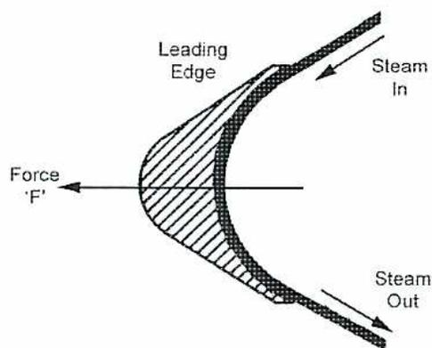
A cross-sectional diagram of an impulse turbine blade. The blade is a curved, hatched shape. On the right, an arrow labeled 'Steam In' points towards the concave (inner) surface of the blade. On the left, an arrow labeled 'Force F' points horizontally to the left, away from the blade. At the bottom right, an arrow labeled 'Steam Out' points away from the blade's exit. The top left of the blade is labeled 'Leading Edge'.
Figure 42
Impulse Turbine Blade Section
In Fig. 42, a force applied to the blade is developed by causing the steam to change direction of flow (Newton's second law—change of momentum). The change of momentum produces the impulse force. In an impulse turbine, there are a number of stationary nozzles and the moving blades are arranged completely around the rotor.
Fig. 43 shows a cutaway of impulse turbine nozzles and buckets. The nozzles are stationary blading attached to the stationary diaphragm. The buckets, or moving blades, on the rotor are attached to the turbine wheels. The wheels are connected to the shaft. The moving blades convert the velocity energy of the steam into mechanical energy causing the shaft to rotate. This turbine type has the disadvantages of very high speed and extremely high centrifugal force.
Figure 43
Impulse Turbine Nozzles and Buckets
Nozzles are often constructed of Monel metal formed over special dies. Monel metal is a high tensile strength nickel-copper alloy. Each nozzle is individually designed for proper expansion of steam at the pressure and temperature specified. The following two types of nozzles are used for steam turbines:
The convergent nozzle, shown in Fig. 44, is used for small pressure drops. As the pressure drop across the nozzle is increased, the steam velocity also increases, but only up to a specific minimum exit pressure called the critical pressure . The ratio of exit pressure to inlet pressure, below which no increase in velocity is possible, is called the critical pressure ratio . A typical value of this ratio for wet or saturated steam is 0.577, while a typical value for superheated steam is 0.55. With a decrease in the exit pressure to a pressure below the critical pressure, any extra energy that is added goes into turbulence and the formation of eddy currents at the nozzle exit, rather than increasing steam velocity.
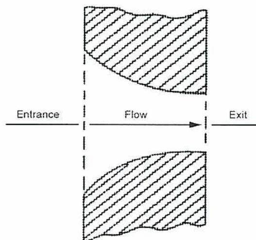
A schematic diagram of a convergent nozzle. It shows a nozzle body, represented by two hatched areas, that narrows from left to right. A horizontal line with an arrow pointing to the right indicates the flow direction. The entrance is marked by a vertical dashed line on the left, and the exit is marked by a vertical dashed line on the right. The labels 'Entrance', 'Flow', and 'Exit' are placed above the nozzle.
Figure 44
Convergent Nozzle
When large pressure drops are required, a convergent-divergent nozzle, Fig. 45, is used. The pressure at the narrowest part of the nozzle, the throat of the nozzle, should be at the critical pressure. The pressure continues to drop in the divergent part of the nozzle. The divergent section is designed to have increasing volume to match the increase in steam volume as the pressure decreases. A properly designed convergent-divergent nozzle can handle any pressure drop, producing the calculated steam velocity, without eddy currents.
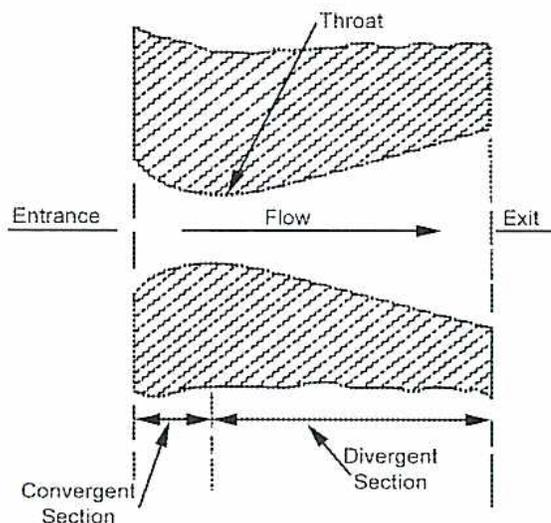
A schematic diagram of a convergent-divergent nozzle. The nozzle body is shown in two hatched parts. It narrows from the entrance on the left to a narrowest point labeled 'Throat', and then widens into a 'Divergent Section' before reaching the 'Exit' on the right. A horizontal line with an arrow indicates the flow direction from left to right. Vertical dashed lines mark the entrance, throat, and exit. The labels 'Entrance', 'Flow', and 'Exit' are above the nozzle. Below the nozzle, arrows point to the 'Convergent Section' (the narrowing part) and the 'Divergent Section' (the widening part).
Figure 45
Convergent-Divergent Nozzle
Explain a steam turbine steam velocity diagram.
Steam nozzles are used to direct steam onto turbine blades at the correct angle resulting in the most efficient energy conversion. The blades utilize the energy in the steam to produce mechanical energy at the turbine shaft.
The principle behind this energy transformation is given in Newton's second law of motion, which states:
$$ \text{Force} = \text{Mass} \times \text{Acceleration} $$
A force can be produced if a mass of some substance can be made to accelerate (or decelerate). The mass applied to a turbine blade is the steam flowing over it. Acceleration is defined as a rate of change of velocity. Velocity is a vector quantity and must be specified in direction as well as magnitude. A change in direction is therefore a change in velocity, and the rate of change is the acceleration produced.
$$ \text{Force} \times \text{Distance moved} = \text{Work done} $$
The product of the force exerted on a turbine blade and the distance through which it moves determine the work done. Work taken over a time interval enables the power produced to be calculated.
Blade velocity diagrams allow an estimate of the power developed from certain turbine nozzle and blade combinations. Fig. 46 shows an example of a single-stage axial-flow turbine with one nozzle (note the steam and blade directions).
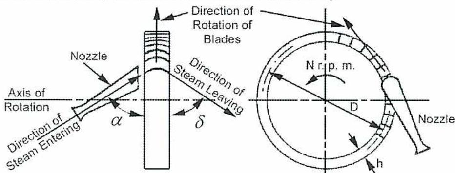
The diagram illustrates a single-stage axial-flow turbine. On the left, a nozzle directs steam towards a set of blades. The steam enters at an angle \( \alpha \) and leaves at an angle \( \delta \) . The blades are mounted on a rotor with a diameter \( D \) . The rotor rotates at a speed \( N \) in r.p.m. The axis of rotation is shown as a dashed line. The direction of rotation of the blades is indicated by a curved arrow. The nozzle is also shown in a cross-sectional view on the right, with the steam flow direction indicated.
Figure 46
Single-Stage Axial Flow Turbine
For the purposes of the following calculations, it is assumed that the row of turbine buckets on the rim of the wheel is equivalent to a straight line of buckets moving in a tangential direction. Fig. 47 shows a cross-section of the flow path looking radially inward towards the axis of rotation.
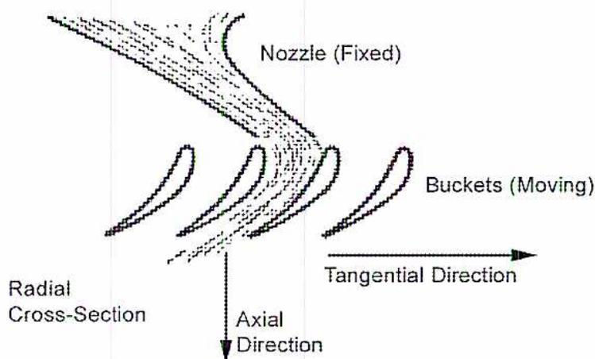
Figure 47
Cross-Section of Steam Flow Path
If one of the buckets, or blades, is considered, and the angles and speeds of steam and blade are drawn, they appear as in Fig. 48.
![Figure 48: Turbine Blade Velocity-Vector Diagram. This vector diagram shows the relationship between steam velocities and blade motion. A horizontal dashed line indicates the 'Direction of Blade Motion'. At the inlet (top), $V_1$ is the absolute steam velocity at angle $\alpha$, and $V_{R1}$ is the relative steam velocity at angle $\beta$. At the outlet (bottom), $V_2$ is the absolute exit velocity at angle $\delta$, and $V_{R2}$ is the relative exit velocity at angle $\gamma$. $V_b$ represents the blade velocity. A shaded bucket profile is shown between the inlet and outlet velocity triangles.](c4c8cd9c58f395c25a2a2b217ca7c2fb_img.jpg)
Figure 48
Turbine Blade Velocity-Vector Diagram
The letters used in the turbine blading diagrams are from the Greek alphabet:
| \( \alpha \) | Alpha |
| \( \beta \) | Beta |
| \( \delta \) | Delta |
| \( \gamma \) | Gamma |
The above angles and sides form the inlet blade velocity diagram.
Another triangle is formed by the conditions obtained at the moving blade outlet as follows:
Calculate the steam velocity and angle of entry for impulse and reaction turbine blading.
The two blading types—impulse and reaction—have basic characteristics which distinguish them. Each blading type has a characteristic shape of velocity vector diagram.
Simple impulse blading is usually made so that the moving blades have the
$$ \text{Inlet angle } \beta = \text{Outlet angle } \gamma $$
Each blade is symmetrical about its centreline.
There is no pressure drop across a moving impulse blade and no velocity increase.
If friction is neglected, there is no velocity decrease.
$$ V_{R1} = V_{R2} $$
The moving blade section of the diagram is shown in Fig. 49.
Where \( \angle \beta = \angle \gamma \) (these angles are usually equal in an impulse turbine)
$$ \text{And } V_{R1} = V_{R2} $$
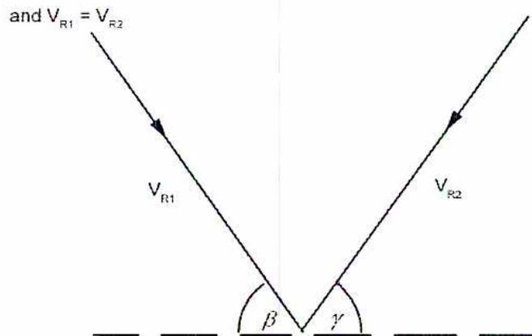
Figure 49
Impulse Moving Bading
Referring to the impulse blading vector diagram in Fig. 50, steam flows from the nozzle of a simple impulse turbine at a velocity of 600 m/s and at an angle of \( 20^\circ \) to the direction of blade motion. Blade velocity is 225 m/s. Neglecting friction, and with equal blade inlet and outlet angles, calculate:
![Figure 50: Impulse Blading Vector Diagram. A horizontal dashed line represents the blade's path. The blade velocity V_B = 225 m/s is shown as a vector along this line. The absolute inlet velocity V_1 = 600 m/s is shown as a vector at an angle alpha = 20 degrees to the horizontal. The relative inlet velocity V_R1 is shown as a vector from the blade's position to the tip of V_1. The relative outlet velocity V_R2 is shown as a vector from the blade's position to the tip of V_2. The absolute outlet velocity V_2 is shown as a vector from the nozzle's position to the blade's position. The diagram includes various horizontal and vertical components labeled X_1, X_B, V_wl, V_w, V_wo, V_fl, and V_TB. The blade inlet angle beta and outlet angle gamma are indicated at the blade's position.](6d06e66b7a838f8c809884aeee597a5e_img.jpg)
Figure 50
Impulse Blading Vector Diagram
Given data:
$$ V_1 = 600 \text{ m/s} $$
$$ V_b = 225 \text{ m/s} $$
$$ \alpha = 20^\circ $$
$$ V_{R2} = V_{R1} $$
$$ \gamma = \beta $$
Values \( X_1 \) and \( X_b \) are added to the diagram for ease of reference and to simplify the trigonometric calculations.
$$ V_{w1} = V_1 \times \cos \alpha $$
$$ V_{w1} = 600 \text{ m/s} \times \cos 20^\circ $$
$$ V_{w1} = 600 \text{ m/s} \times 0.9397 $$
$$ V_{w1} = 563.82 \text{ m/s} $$
$$ V_{f1} = V_1 \times \sin \alpha $$
$$ V_{f1} = 600 \text{ m/s} \times \sin 20^\circ $$
$$ V_{f1} = 600 \text{ m/s} \times 0.3420 $$
$$ V_{f1} = 205.21 \text{ m/s} $$
$$ X_1 = V_{w1} - V_b $$
$$ X_1 = 563.82 \text{ m/s} - 225 \text{ m/s} $$
$$ X_1 = 338.82 \text{ m/s} $$
$$ \beta = \tan^{-1} \frac{V_{f1}}{X_1} $$
$$ \beta = \tan^{-1} \left( \frac{205.21 \text{ m/s}}{338.82 \text{ m/s}} \right) $$
$$ \beta = \tan^{-1} (0.6057) $$
$$ \beta = 31^\circ 12' \text{ (Ans.)} $$
$$ \text{Blade outlet angle } \gamma = \text{Blade inlet angle } \beta $$
$$ \gamma = \beta $$
$$ \text{Blade outlet angle } \gamma = 31^\circ 12' \text{ (Ans.)} $$
$$ \text{Since } V_{R2} = V_{R1} $$
$$ X_B = X_1 $$
$$ \text{But } X_1 = 338.82 \text{ m/s} $$
$$ X_B = 338.82 \text{ m/s} $$
$$ V_{W0} = X_E - V_B $$
$$ V_{W0} = 338.82 \text{ m/s} - 225 \text{ m/s} $$
$$ V_{W0} = 113.82 \text{ m/s} $$
$$ V_{FB} = V_{F1} $$
$$ \text{But } V_{F1} = 205.21 \text{ m/s} $$
$$ V_{FB} = 205.21 \text{ m/s} $$
From Pythagoras' theorem:
$$ V_2 = \sqrt{V_{FB}^2 + V_{W0}^2} $$
$$ V_2 = \sqrt{(205.21 \text{ m/s})^2 + (113.82 \text{ m/s})^2} $$
$$ V_2 = \sqrt{42111.14 + 12954.99} $$
$$ V_2 = \sqrt{55066.13} $$
Magnitude of steam velocity \( V_2 = 234.66 \text{ m/s} \) (Ans.)
Reaction blading is made so that the moving and fixed blades are identical. This relationship produces a 50% reaction turbine in which 50% of the steam's loss of enthalpy occurs in the fixed blades and 50% occurs in the moving blades; 100% reaction blading is not attainable in practice. The term reaction turbine usually refers to a 50% reaction turbine.
Moving blade inlet angle \( \beta \) = Fixed blade inlet angle \( \delta \)
Moving blade exit angle \( \gamma \) = Fixed blade exit angle \( \alpha \)
The relative velocity of the steam does not remain constant over the moving blade, as in an impulse turbine, because the steam is expanding as it flows over the blade. This expansion causes a pressure drop and a consequent velocity increase; \( V_{R2} \) will therefore be greater than \( V_{R1} \) .
Because angles \( \beta \) and \( \delta \) are equal and angles \( \gamma \) and \( \alpha \) are equal, the blade velocity vector diagram for a 50% reaction turbine is symmetrical about a central vertical axis as shown in Fig. 51.
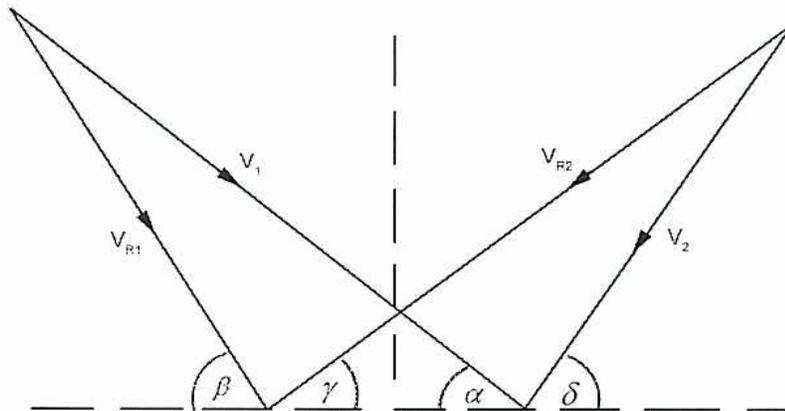
Figure 51
Reaction Blading Diagram
Referring to the reaction blading vector diagram in Fig. 52, at one stage in a reaction turbine, the velocity of the steam leaving the fixed blades is 100 m/s and the fixed blade exit angle is \( 20^\circ \) . The linear velocity of the moving blade is 66 m/s. The steam consumption is 1.4 kg/s. Assuming the fixed and moving blades have identical sections, calculate the entrance angle of the blades.
![Figure 52: Reaction Blading Vector Diagram. A detailed vector diagram for a reaction turbine stage. The horizontal axis represents the blade velocity Vb = 66 m/s. The absolute velocity of steam leaving the fixed blades is V1 = 100 m/s at an angle alpha = 20 degrees. The relative velocity of steam entering the moving blades is VR1. The absolute velocity of steam leaving the moving blades is V2. The relative velocity of steam leaving the moving blades is VR2. The diagram also shows the axial components of velocity (Vf1, Vf2) and the tangential components (Vw1, Vw2). The entrance angle beta is the unknown to be determined.](3ef2266eb61ae3929cdae1742c1f526e_img.jpg)
Figure 52
Reaction Blading Vector Diagram
Given data:
$$ \begin{aligned} V_1 &= 100 \text{ m/s (because fixed blade outlet is moving blade inlet)} \\ \alpha &= 20^\circ \text{ (because fixed blade outlet is moving blade inlet)} \\ V_b &= 66 \text{ m/s} \end{aligned} $$
$$ \begin{aligned} V_{w1} &= V_1 \times \cos \alpha \\ V_{w1} &= 100 \text{ m/s} \times \cos 20^\circ \\ V_{w1} &= 100 \text{ m/s} \times 0.9397 \\ V_{w1} &= 93.97 \text{ m/s} \end{aligned} $$
$$ \begin{aligned} V_{F1} &= V_1 \times \sin \alpha \\ V_{F1} &= 100 \text{ m/s} \times \sin 20^\circ \\ V_{F1} &= 100 \text{ m/s} \times 0.3420^\circ \\ V_{F1} &= 34.20 \text{ m/s} \end{aligned} $$
$$ \begin{aligned} X_1 &= V_{w1} - V_B \\ X_1 &= 93.97 \text{ m/s} - 66 \text{ m/s} \\ X_1 &= 27.97 \text{ m/s} \end{aligned} $$
$$ \begin{aligned} \beta &= \tan^{-1} \left( \frac{V_{F1}}{X_1} \right) \\ \beta &= \tan^{-1} \left( \frac{34.20 \text{ m/s}}{27.97 \text{ m/s}} \right) \\ \beta &= \tan^{-1} (1.2227) \\ \beta &= 50^\circ 43' \text{ (Ans.)} \end{aligned} $$
Calculate the work done on steam turbine blades and the resulting power developed.
The force exerted on a blade depends upon the change in the component of the steam velocity in the direction of the blade movement. At the inlet to the blade this component will be \( V_1 \cos \alpha \) . This is an absolute velocity referred to as the velocity of whirl .
At the outlet from the blade, the velocity of whirl is \( V_2 \cos \delta \) .
Fig. 53 shows that \( V_1 \cos \alpha \) must be in a left to right direction, whereas \( V_2 \cos \beta \) is in a right to left direction.
Thus, the total change in this component of velocity is the sum of \( V_1 \cos \alpha \) and \( V_2 \cos \beta \) .
The force exerted on the blade is given by:
$$ \text{Force} = \text{mass} \times \text{acceleration} $$
$$ F \text{ (newtons)} = \text{kg steam flowing/s} \times \text{change in velocity (m/s}^2\text{)} $$
$$ F \text{ (newtons)} = m(V_1 \cos \alpha + V_2 \cos \beta) $$
The force \( F \) newtons exerted on the blade does work by moving the blade.
$$ \text{Work done/s} = F \text{ (N)} \times \text{Blade speed (m/s)} $$
$$ \text{Power developed} = \frac{F \times V_b}{1000} \text{ kW} $$
where \( V_b \) = blade speed, m/s
Fig. 53 shows the inlet triangle.
![Figure 53: Inlet Triangle. A vector diagram showing the inlet conditions for a turbine. A vertical dashed line on the left represents the 'Direction of Steam Flow Through the Turbine'. A horizontal dashed line represents the 'Direction of Blade Movement'. The absolute velocity vector V1 is shown at an angle alpha to the horizontal. Its components are Vf1 (vertical, flow) and Vw1 (horizontal, whirl). The relative velocity vector Vr1 is shown at an angle beta to the horizontal. The base of the triangle is the blade velocity Vb.](c3c305cefbac2e7b13be34ab87054d1e_img.jpg)
Figure 53
Inlet Triangle
The vector \( V_1 \) is resolved into two components:
Fig. 54 shows the vector diagram of the steam exit vectors.
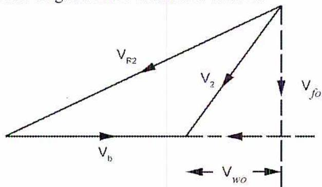
Figure 54
Steam Exit Vectors
The vector \( V_2 \) is resolved into two components:
Fig. 55 shows the inlet and outlet triangles superimposed upon the common base \( V_b \) .
![Figure 56: Inlet and Outlet Triangles. This is a velocity vector diagram for a turbine stage. A horizontal line at the bottom represents the blade speed V_b, moving from left to right. Point A is on this line, and point B is further to the right. Vector V_1 (absolute inlet velocity) starts from a point above A and points down to A at an angle beta. Vector V_R1 (relative inlet velocity) starts from A and points up to the same point as V_1. Vector V_2 (absolute exit velocity) starts from B and points up to a point above B at an angle delta. Vector V_R2 (relative exit velocity) starts from B and points up to the same point as V_2. The angle between V_1 and the horizontal at A is beta. The angle between V_R1 and the horizontal at A is gamma. The angle between V_2 and the horizontal at B is delta. The angle between V_R2 and the horizontal at B is alpha. Vertical dashed lines at the left and right show the total change in the vertical component of velocity (whirl).](352c5fab6f936356e9570761a02ab71e_img.jpg)
Figure 56
Inlet and Outlet Triangles
This is a convenient arrangement for the solution of problems, particularly when the total change in velocity of whirl is required for calculation of turbine stage power.
The turbine blade velocity-vector diagram in Fig. 56 shows some interesting aspects. The vectors \( V_1 \) and \( V_2 \) represent steam flows measured from fixed points (absolute velocities). The two angles, \( \alpha \) and \( \delta \) , are respectively the exit and the entrance angles for the rows of fixed blades.
The point \( B \) can therefore be said to represent the fixed blade conditions.
The vectors \( V_{R1} \) and \( V_{R2} \) represent steam conditions measured from moving blades (relative velocities). Further, the angles \( \beta \) and \( \gamma \) are the inlet and exit angles of the moving blade. Thus, point \( A \) can be said to represent the moving blade conditions.
Referring to the vector diagram in Fig. 56, steam at a velocity of 760 m/s from a nozzle is directed onto the blades of a turbine at \( 20^\circ \) to the direction of blade movement.
Calculate the inlet angle of the blades so that the steam will enter without shock when the linear velocity of the blades is 275 m/s. If the exit angle of the blades is the same as the inlet angle, find, neglecting blade friction, the magnitude and direction of the steam velocity leaving the blades.
Given
$$ V_1 = 760 \text{ m/s} $$
$$ V_b = 275 \text{ m/s} $$
Find \( V_2 \) and Angle \( \delta \)
![Figure 56: Vector Diagram for a simple impulse turbine. The diagram shows the velocity vectors at the inlet (C) and outlet (E) of the moving blades. The inlet absolute velocity V1 = 760 m/s is at an angle of 20° to the horizontal. The inlet relative velocity VR1 is at an angle β to the horizontal. The blade velocity Vb = 275 m/s is shown as the vector AB. The outlet absolute velocity V2 is at an angle δ to the vertical. The outlet relative velocity VR2 is at an angle γ to the horizontal. The angle between the horizontal and the line CB is 20°. The angle between the horizontal and the line AB is 20°. The angle between the horizontal and the line AC is β. The angle between the horizontal and the line AE is γ. The angle between the horizontal and the line BE is 20°. The angle between the vertical and the line BE is δ. The direction of blade movement is indicated by an arrow pointing to the right from F.](adb1f42239329fa8283d1a40005f989f_img.jpg)
Figure 56
Vector Diagram
The turbine is a simple impulse type since the inlet and exit angles of the moving blade are equal. Point A on the diagram represents conditions around the moving blade. Given that no friction occurs as the steam flows over the blades, the incoming velocity \( V_{R1} \) will be the same as the exit velocity \( V_{R2} \) . The direction is such that
$$ \text{angle } \beta = \text{angle } \gamma $$
If perpendiculars are dropped from C to D and from E to F , the following calculations can be carried out.
In triangle BCD :
$$ \sin 20^\circ = \frac{CD}{V_1} $$
$$ CD = V_1 \times \sin 20^\circ $$
$$ CD = 760 \times 0.3420 $$
$$ CD = 259.94 \text{ m/s} $$
$$ \cos 20^\circ = \frac{DB}{V_1} $$
$$ DB = V_1 \times \cos 20^\circ $$
$$ DB = 760 \text{ m/s} \times 0.9397 $$
$$ DB = 714.17 \text{ m/s} $$
$$ DA = DB - AB $$
$$ DA = 714.17 - 275 \text{ m/s} $$
$$ DA = 439.17 \text{ m/s} $$
In triangle \( ACD \) :
$$ \tan \beta = \frac{CD}{DA} $$
$$ \tan \beta = \frac{259.94}{439.17} $$
$$ \tan \beta = 0.5919 $$
$$ \text{Angle } \beta = 30^\circ 37' \text{ (Ans.)} $$
This is the inlet angle of the blades.
$$ \sin \beta = \frac{CD}{VR_1} $$
$$ VR_1 \sin \beta = CD $$
$$ VR_1 = \frac{CD}{\sin \beta} $$
$$ VR_1 = \frac{259.94 \text{ m/s}}{\sin 30^\circ 37'} $$
$$ VR_1 = \frac{259.94 \text{ m/s}}{0.5093} $$
$$ VR_1 = 510.39 \text{ m/s} $$
Since there is no friction of steam over the blades, \( V_{R2} \) will also be 510.39 m/s and angle \( \gamma \) will be \( 30^\circ 37' \) .
Now consider triangle \( AEF \) :
$$ EF = CD $$
$$ EF = 259.94 \text{ m/s} $$
$$ \cos 30^\circ 37' = \frac{AF}{V_{R2}} $$
$$ AF = V_{R2} \times \cos 30^\circ 37' $$
$$ AF = 510.39 \text{ m/s} \times 0.8606 $$
$$ AF = 439.24 \text{ m/s} $$
In triangle BEF:
$$ BF = AF - V_b $$
$$ BF = 439.24 \text{ m/s} - 275 \text{ m/s} $$
$$ BF = 164.24 \text{ m/s} $$
$$ \tan \delta = \frac{EF}{BF} $$
$$ \tan \delta = \frac{259.94 \text{ m/s}}{164.24 \text{ m/s}} $$
$$ \tan \delta = 1.5827 $$
$$ \angle \delta = 57^\circ 43' \text{ (Ans.)} $$
This is the direction of the steam leaving the blades.
$$ \sin 57^\circ 43' = \frac{EF}{V_2} $$
$$ V_2 = \frac{EF}{\sin 57^\circ 43'} $$
$$ V_2 = \frac{259.94 \text{ m/s}}{0.8434} $$
$$ V_2 = 308.21 \text{ m/s} \text{ (Ans.)} $$
This is the steam velocity leaving the blades, measured from the turbine casing, i.e. an absolute velocity.
Referring to Fig. 57, steam leaves the fixed blades of one stage of a reaction turbine at 120 m/s with an exit angle of \( 25^\circ \) . The moving blades travel with a linear speed of 90 m/s and the steam consumption of the turbine is 1 kg/s.
Calculate the entrance angle of the blades and the horsepower developed in one turbine stage (assume 50% reaction blading).
![Figure 57: Vector Diagram for a reaction turbine. The diagram shows two horizontal lines representing the absolute velocity (V1) and blade velocity (Vb) paths. Point C is on the top line, and point E is on the top line. Point D is on the bottom line, and point F is on the bottom line. Point A is on the bottom line, and point B is on the bottom line. The vector V1 = 120 m/s is shown as a solid line from C to B. The vector Vb = 90 m/s is shown as a solid line from A to B. The vector VRI is shown as a dashed line from C to A. The angle between the horizontal line CE and the vector CB is 25°. The angle between the horizontal line DF and the vector CB is 25°. The angle between the horizontal line DF and the vector CA is β. The angle between the horizontal line DF and the vector AB is α. The total change in velocity of whirl is shown as a horizontal line from C to E.](2236272d3b3db6e6363337f5a8db72f6_img.jpg)
Figure 57
Vector Diagram
Given:
$$ V_1 = 120 \text{ m/s} $$
$$ V_b = 90 \text{ m/s} $$
$$ \angle \alpha = 25^\circ $$
Reaction (or 50% reaction) blading has identical moving and fixed blades. The angles and vectors around point A are duplicated around point B . The angle required is \( \beta \) .
$$ \cos 25^\circ = \frac{DB}{V_1} $$
$$ DB = V_1 \cos 25^\circ $$
$$ DB = 120 \text{ m/s} \times 0.9063 $$
$$ DB = 108.76 \text{ m/s} $$
$$ DA = DB - AB $$
$$ DA = 108.76 \text{ m/s} - 90 $$
$$ DA = 18.76 \text{ m/s} $$
$$ \sin 25^\circ = \frac{CD}{V_1} $$
$$ CD = V_1 \sin 25^\circ $$
$$ CD = 120 \text{ m/s} \times 0.4226 $$
$$ CD = 50.71 \text{ m/s} $$
$$ \tan \beta = \frac{CD}{DA} $$
$$ \tan \beta = \frac{50.71 \text{ m/s}}{18.76 \text{ m/s}} $$
$$ \tan \beta = 2.7031 $$
Entrance angle of the blades \( \beta = 69^\circ 42' \) (Ans.)
The total change in the velocity of whirl is required for calculations of work done on the blading as detailed earlier. This is represented by the length \( CE \) on the diagram:
$$ CE = DA + AB + BF \text{ (because } CD \text{ and } EF \text{ are perpendiculars)} $$
If the diagram is symmetrical about its centre:
$$ \text{then } DA = BF $$
$$ \text{and } CE = 2 \times DA + AB $$
But \( AB \) is blade speed 90 m/s and \( DA = 18.76 \text{ m/s} \)
$$ CE = 2 \times DA + AB $$
$$ CE = (2 \times 18.76 \text{ m/s}) + 90 \text{ m/s} $$
$$ CE = 37.52 \text{ m/s} + 90 \text{ m/s} $$
$$ CE = 127.52 \text{ N} $$
Force exerted on blading = \( w \times a \) (newtons)
Force exerted on blading = kg steam/s \( \times \) change in velocity, m/s 2
Force exerted on blading = 1.0 kg/s \( \times \) 127.52 m/s
Force exerted on blading = 127.52 N
Horsepower developed = force \( \times \) bleed speed, Nm/s
$$ \text{Horsepower developed} = \frac{127.52 \text{ N} \times 90 \text{ m/s}}{1000} $$
Horsepower developed = 11.48 kW (Ans.)
Referring to Fig. 58, a single-stage impulse turbine has a steam consumption of 20 kg/min. The nozzles are inclined at \( 20^\circ \) to the plane of the wheel and steam leaves the nozzles at 600 m/s. The mean diameter of the blade ring is 1 metre and the wheel rotates at 5000 rev/min. Find the inlet angle of the moving blades and the power of the wheel, neglecting all losses.
![Blade Velocity Vector Diagram (Figure 58). The diagram shows a horizontal line segment AB representing the blade speed V_b = 261.8 m/s. Point A is the origin for the absolute velocity vector V_1 = 600 m/s, which makes an angle of 20 degrees with the horizontal. Point C is vertically above A, and point D is vertically below A. The relative velocity vector V_R1 is shown from C to A, making an angle beta with the horizontal. The absolute velocity vector V_2 is shown from A to E, making an angle gamma with the horizontal. The relative velocity vector V_R2 is shown from E to B, making an angle alpha with the horizontal. The change in velocity of whirl is indicated by the horizontal distance CE.](eaae122ace5c0d761133c6ce971a6ffd_img.jpg)
Figure 58
Blade Velocity Vector Diagram
Blade wheel rotates at 5000 rev/min. Circumference is \( \pi \times 1 \) m.
$$ \text{Linear blade speed} = \pi \times 1 \text{ m/rev} \times \frac{5000 \text{ rev/min}}{60 \text{ s/min}} $$
$$ \text{Linear blade speed} = 3.1416 \times 1 \text{ m/rev} \times 83.33 $$
$$ \text{Linear blade speed} = 261.80 \text{ m/s} $$
To find the power of the wheel, it is necessary to find the change in velocity of whirl, i.e. the distance \( CE \) on the diagram.
In the triangle \( BCD \) :
$$ \cos 20^\circ = \frac{DB}{V_1} $$
$$ DB = V_1 \times \cos 20^\circ $$
$$ DB = 600 \text{ m/s} \times 0.9397 $$
$$ DB = 563.82 \text{ m/s} $$
$$ DB = DA + AB $$
$$ DA = DB - AB $$
$$ DA = 563.82 \text{ m/s} - 261.80 \text{ m/s} $$
$$ DA = 302.02 \text{ m/s} $$
$$ \sin 20^\circ = \frac{CD}{V_1} $$
$$ CD = V_1 \times \sin 20^\circ $$
$$ CD = 600 \text{ m/s} \times 0.3420 $$
$$ CD = 205.21 \text{ m/s} $$
$$ \tan \beta = \frac{CD}{DA} $$
$$ \tan \beta = \frac{205.21 \text{ m/s}}{302.02 \text{ m/s}} $$
$$ \tan \beta = 0.6795 $$
Inlet angle of moving blades = \( 34^\circ 12' \) (Ans.)
This is the inlet angle of the moving blades. Angle \( \beta \) is assumed to be equal to angle \( \gamma \) (for simple impulse blading). \( V_{R1} \) (inlet steam speed relative to moving blade) will be equal to \( V_{R2} \) (outlet steam speed relative to moving blade) if there is no friction loss in passing over the blades.
In triangles \( CDA \) and \( EFA \) :
$$ \text{Angle } \beta = \text{Angle } \gamma $$
$$ \text{and } CA = EA $$
\( CD \) will be equal to \( EF \) because both are perpendiculars dropped to the same base.
The triangles are congruent and \( DA = AF \) .
The total change in velocity is given by the distance \( CE \)
$$ CE = DA + AF $$
Note: If the angles \( \beta \) and \( \gamma \) are large enough, the perpendicular \( EF \) will bring \( F \) to the left of point \( B \) . This would represent steam leaving the moving blades with a velocity component, in the direction of whirl, which is less than the blade speed \( AB \) ; i.e. , the leaving steam would be moving partly in the direction of the blades.
In this case:
$$ AF = DA $$
$$ \text{but } DA = 302.02 \text{ m/s} $$
$$ AF = 302.02 \text{ m/s (which is greater than the blade speed } 261.80 \text{ m/s)} $$
$$ CE = DA + AF $$
$$ CE = 302.02 \text{ m/s} + 302.02 \text{ m/s} $$
$$ CE = 604.04 \text{ m/s} $$
$$ \text{Force on blades (newtons)} = w \times \alpha $$
$$ w = \frac{20 \text{ kg/min}}{60 \text{ s/min}} $$
$$ \alpha = \text{change of velocity} $$
$$ \alpha = 604.04 \text{ m/s} $$
$$ \text{Force on blades (newtons)} = w \times \alpha $$
$$ \text{Force on blades (newtons)} = \frac{20 \text{ kg/min}}{60 \text{ s/min}} \times 604.04 \text{ m/s} $$
$$ \text{Force on blades (newtons)} = 201.35 \text{ N} $$
$$ \text{Power} = \text{force} \times \text{blade speed (Nm/s or watts)} $$
$$ \text{Power} = \frac{201.35 \text{ N} \times 261.80 \text{ m/s}}{1000} $$
$$ \text{Power} = 52.71 \text{ kW (Ans.)} $$
Calculate steam turbine Rankine cycle thermal efficiency.
The Rankine cycle is the cycle used in steam plants. A temperature-entropy diagram of the Rankine cycle is shown in Fig. 59. The heat supplied to the steam includes superheat de after the steam leaves the boiler dry and saturated at d . This heat addition will follow the constant pressure line from d to e . The expansion of steam through the turbine is given by ef , which in the ideal case is a vertical line (at constant entropy). The thermal efficiency of this cycle is:
$$ \text{Thermal efficiency} = \frac{\text{work done}}{\text{heat supplied}} $$
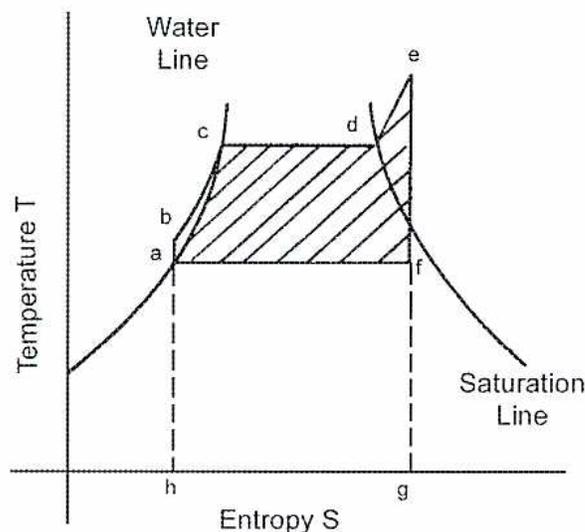
A Temperature-Entropy (T-S) diagram for the Rankine cycle. The vertical axis is labeled 'Temperature T' and the horizontal axis is labeled 'Entropy S'. A saturation dome is shown with a 'Water Line' (saturated liquid line) on the left and a 'Saturation Line' (saturated vapor line) on the right. The cycle consists of several states: a is on the Water Line; b is on the Water Line at a higher temperature and entropy than a ; c is on the Water Line at a higher temperature and entropy than b ; d is on the Saturation Line at the same temperature as c ; e is a superheated vapor state at a higher temperature and entropy than d ; f is on the Saturation Line at a lower temperature and entropy than e ; g is on the Saturation Line at the same entropy as f ; h is on the Water Line at the same entropy as g . The cycle path is a-b-c-d-e-f-g-h-a . The area under the path a-b-c-d-e-f is shaded with diagonal lines. Vertical dashed lines connect h to a and g to f .
Figure 59
Temperature-Entropy Diagram for Rankine Cycle
Note: Rankine cycle efficiency is the efficiency of the cycle including boiler, turbine, and condenser. It is not the efficiency of the steam turbine by itself. It is the ratio of the shaded area ( abcdef ) of the diagram to the total area ( habcdefg ).
Steam is supplied to a turbine at a pressure of 6000 kPa and 500°C. It is expanded adiabatically and without friction to a backpressure of 10 kPa. It is condensed at this pressure and returned to the boiler through an extraction pump and feed pump.
Neglecting the pump work, calculate:
This could be done from first principles by calculating the total heat supplied to give the whole diagram area, and then subtracting the product of the entropy change h to g and the temperature h to a .
The calculations can also be done using the steam tables, as shown below.
$$ \text{Total heat per kg steam at 6000 kPa and 500}^\circ\text{C} = 3422.2 \text{ kJ/kg} $$
$$ \text{Enthalpy of water at 10 kPa} = 191.83 \text{ kJ/kg} $$
$$ \text{Heat supplied} = 3422.2 \text{ kJ/kg} - 191.83 \text{ kJ/kg} $$
$$ \text{Heat supplied} = \mathbf{3230.37 \text{ kJ/kg}} \text{ (Ans.)} $$
$$ \text{Entropy of steam per kg at 6000 kPa and 500}^\circ\text{C} = 6.8803 \text{ kJ/kg} $$
$$ \text{Entropy of 1 kg water at 10 kPa} = 0.6493 \text{ kJ/kg} $$
$$ \text{Difference} = \text{change in entropy} $$
$$ \text{Difference} = 6.8803 \text{ kJ/kg} - 0.6493 \text{ kJ/kg} $$
$$ \text{Difference} = 6.2310 \text{ kJ/kg} $$
\( T_a \) = absolute temperature of steam at 10 kPa
$$ T_a = 45.81^\circ\text{C} + 273 $$
$$ T_a = 318.81\text{K} $$
$$ \begin{aligned}\text{Heat rejected} &= \text{area on the graph afgh} \\ &= T_a \times \text{Entropy change h to g} \\ &= 318.81 \text{ K} \times 6.231 \text{ kJ/kg} \\ &= 1986.51 \text{ kJ}\end{aligned} $$
$$ \text{Work done} = 3230.37 \text{ kJ/kg} - 1986.51 \text{ kJ/kg} $$
$$ \text{Work done} = \mathbf{1243.86 \text{ kJ/kg}} \text{ (Ans.)} $$
(c) Thermal efficiency.
$$ \text{Rankine Cycle Thermal Efficiency} = \frac{\text{work done}}{\text{heat supplied}} $$
$$ \text{Rankine Cycle Thermal Efficiency} = \frac{1243.86}{3230.37} \times 100 $$
$$ \text{Rankine Cycle Thermal Efficiency} = 0.3851 \times 100 $$
$$ \text{Rankine Cycle Thermal Efficiency} = \mathbf{38.51\%} \text{ (Ans.)} $$
11. Steam is supplied to a turbine at a pressure of 10 250 kPa and 500°C. It is then expanded adiabatically and without friction to a backpressure of 15 kPa. It is condensed at this pressure and returned to the boiler by a feedwater pump.
Neglecting the pump work, calculate: